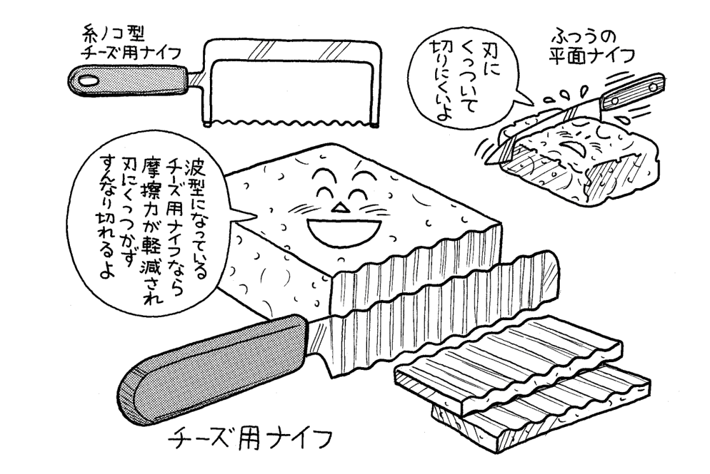
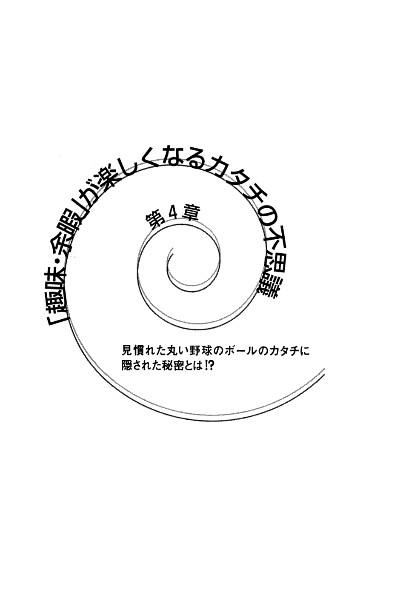
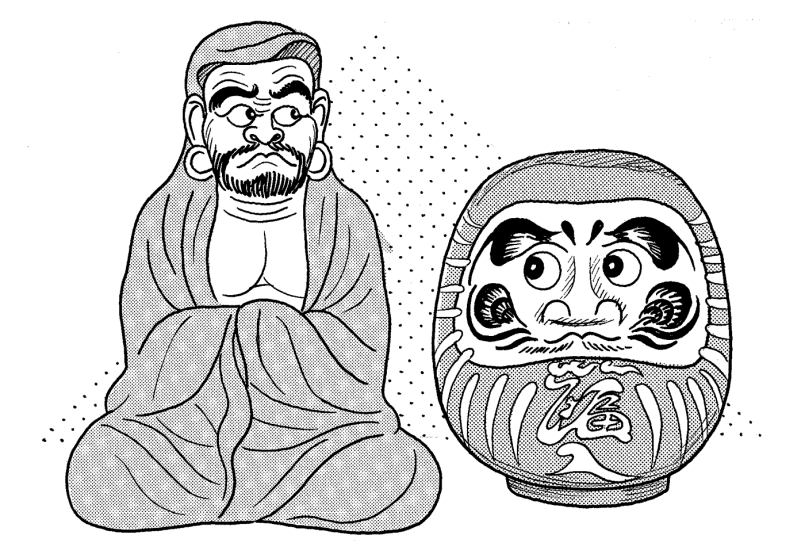

| 「カタチの不思議」なるほど雑学事典 | |
| 日本博学倶楽部 | |

「カタチの不思議」なるほど雑学事典
ドーナツの穴から富士山まで、意外な真相
日本博学倶楽部
「カタチの不思議」なるほど雑学事典／目次
マンホールのフタが四角ではなく丸いのは落ちることがないため!?
ビール瓶の についたギザギザの数は全世界共通のものだった!?
ドーナツに穴があいているのはある主婦の思いつきだった!?
見慣れた丸い野球のボールのカタチに隠された秘密とは!?
鳥がＶ字形の列をつくって飛ぶ理由には科学的根拠が存在した!?
ダルマの顔かたちのモデルとなった達磨大師とはどんな人？
取材協力――セイコー株式会社
株式会社テトラ
大日本除虫菊株式会社
株式会社亀の子束子西尾商店
財団法人製粉振興会
浪花屋製菓株式会社
株式会社中村屋
日本コカ・コーラ株式会社
株式会社ツクダオリジナル（順不同）
本文イラスト――高田恵一
装丁――ＣＧＳ・野地恵美子
装画――添田あき
マンホールのフタ
丸が良くて、四角じゃまずい理由は図形の不思議にあり！
街なかを、足元を見ながら歩いてみると、たくさんのマンホールがあることがわかる。そのカタチは、ほとんどが丸い。四角いものもあるが、やはりマンホールは丸いのが自然な印象だ。
なぜマンホールは丸いものが多いのか。それは四角いマンホールには、ある欠点があるためだ。
正方形を考えてみよう。一辺の長さは必ず対角線の長さより短い。つまり四角いとフタを外してずらしたときに、穴のなかへ落ちる危険性があるのである。
一方、丸はちがう。穴の幅をあらゆる方向からはかってみても、必ずフタの直径の長さ以上にはならない。つまりフタが割れてしまわないかぎり、落ちないということなのだ。
これは穴の深さとも関係がある。落ちると危険性が高い深い穴のマンホールのフタはほとんどが丸い。一方、落ちてもすぐ拾い上げられるような浅い穴のマンホールのフタなら問題がないので、四角いものもかなり使われている。四角いマンホールのフタも適材適所というわけだ。
しかし、なかには深い穴でも四角いフタが使われているところもある。だがこれには、ちゃんと落ちないように対策がなされている。外れないように、蝶 番 を使って止めてあるのだ。落ちてしまっては、マンホール内で作業する人ばかりでなく、路上の車や人の安全性にもかかわってくるのだから当然だろう。
円というカタチの不思議を利用して、安全性を高めたのが、マンホールの丸いフタだったというわけだ。
自動車タイヤ
自動車になくてはならない四つの車輪 機能性追求のために刻み込まれた溝とは
人が自動車を見るとき、おもに目がいくのは車体デザインだろう。よほどの自動車マニアでないかぎり、タイヤに目を止めることは少ないものだ。
だが、このタイヤは自動車が走行するにあたって、もっとも大事であるともいえる。エンジンの力を路面に伝えるのはほかならぬタイヤなのだ。安全で、なおかつ快適な乗り心地を保証してくれるタイヤでなくては、どんなに高級な自動車もダメなものになってしまう。
そのタイヤになくてはならないものが「溝」である。
単純な物理法則だと、タイヤと道路の接地面積は広ければ広いほど摩擦力が高くなり、運動性能は上がる。つまりツルンとしたタイヤのほうが、より速く走れるというわけだ。Ｆ１などのレーシングカーのタイヤが、溝のないスリックタイヤなのはそのためだ。
しかし一般道を走る自動車は天候や道路条件が変化する。
まず雨。路面とタイヤとの間に水がたまると、水のうえに乗っかってしまうことになり、滑って制御できなくなってしまう。そのためタイヤに溝を切り、水を逃がしてやらなくてはならない。
また、溝のタイプによって凸凹道での駆動力や制動力に優れるものや路面とタイヤが接地するときに生ずるノイズを抑えるものがある。
そういったさまざまなことを解決するために溝はあるのだ。たまにはゆっくりとタイヤの溝を眺めてみよう。独特な溝のカタチには、機能美が感じられることだろう。
販売店の時計
時計販売店で見る十時十分 そこにはメーカーの営業上の理由が
ＣＭや時計販売店、あるいはカタログなどで見るアナログ時計の針は、だいたいのものが十時十分頃を指している。
これはいったいなぜなのだろうか。セイコー㈱の広報部によれば、同社製の時計については正確には十時八分四十二秒を指しているということである。
その理由はというと、まず第一に見映え、バランスがいいからだという。時計の針が下に下がった状態よりも上がっている方がカッコイイというわけである。
二つ目の理由としては、時針、分針、秒針が重ならないから。この三本の針が重なっていないことで、パッと見ただけでこの時計には、秒針までついていることを知らせることができるのだ。
そして、もう一つ大事な理由がある。ほとんどのアナログ時計には十二時のちょっと下のところと、六時のちょっと上のところにブランド名が入っている。つまり、この二つの場所にあるブランド名を隠さず、かつ際立たせるように魅せなければならないのだ。そのためのベスト時刻でもある。
ただし、ほかのブランドではまた別の時刻を採用しているという。
一方、デジタル時計ではどうだろうか。
セイコー㈱では十時八分五十九秒を採用している。これはすべてのドット（数字を表示している点）を使用して見せるため、また四十二では「しに」で語呂が悪いため、という二つの理由からである。
販売店の店頭などで何気なく目にする時計の時刻にも、メーカーのこんな細かい気配りがあったのた。
エスカレーター
どこで乗っても同じような印象の理由はその角度に秘密があった！
ほんの五、六十年前あたりまでは、まだまだエスカレーターは、未来色豊かな移動手段だったろうが、いまとなってはごくふつうのものになってしまった。地下鉄でもデパートでも、わたしたちは当たり前のようにその便利さを享受している。
最初にエスカレーターが姿をあらわしたのは、一九〇〇年のパリ万博のことである。日本では一九一四年の大正博覧会であった。そのときのキャッチコピーが興味深い。
「実用と娯楽の併用機関」。いま、エスカレーターを「娯楽」と感じる人はほとんどいないだろう。まさに隔世の感ありだ。
このエスカレーターには二通りの駆動方式がある。ステップ駆動方式とマルチ駆動方式だ。前者はエスカレーターの上と下の階に鉄骨の枠を渡し、そのなかを電動モーターで動く歯車を回すことで、二本のチェーンにステップを乗せてエンドレスで回る仕組みになっている。ただし、長い道のりをつくるためには動力伝達部品を大きくしなくてはならない。そこで考え出されたのが、東京の営団地下鉄・新御茶ノ水駅にあるようなとても長いエスカレーターに対応できるマルチ駆動方式だ。動力部品を分散して配置できるのが強みなのである。
しかし、どこのエスカレーターも同じような印象を受けるのはなぜだろうか。わたしたちが使いなれてしまったからというのもあるだろうが、じつはほかにも理由がある。建築基準法で速度と傾斜角が定められているのだ。
速度は毎分三〇メートル以下、傾斜角は三〇度以下。もしこの法律がなければ、とんでもないスピードでとんでもない角度のエスカレーターができることもあるというわけだ。
セーラー服
もともとは水兵の制服 襟のカタチに隠されたすぐれた機能とは？
十九世紀のイギリスで、水兵の制服として誕生したセーラー服。日本では女子中高生の制服としてのイメージのほうが強いが、もともとは軍服の一つだったのである。アメリカのアニメキャラクター、ポパイが着ているが、これは彼が水兵であることを示している。
セーラー服のカタチの特徴は、背中の部分の四角い大きな襟だ。これは、十九世紀のイギリスで流行した髪型と関係がある。
当時、男性の間で、ピッグテール（豚のしっぽ）と呼ばれるおさげ髪がはやっていた。長い髪を後ろに束ねてたらすスタイルである。この長髪の先端が汚れていると、服の背中にも汚れがついてしまう。
それを防ぐために、四角い大きな襟をつけたというわけだ。清潔な着こなしに対する気配りの産物だ。
しかし、大きな襟の理由はこれだけではなかった。水兵の制服として、すぐれた機能を発揮することができたのだ。
水兵の仕事は基本的に風の強い船の上。そこで活動するさいに、この襟は役に立つ。上官の命令や、笛の合図などをマストの上で聞きとるために、大きな四角い襟を立てたのである。
だが、もしいまの女子高生がセーラー服の襟を立てていたら、異様な光景として映ることであろう。
日本では、機能的な側面は忘れ去られ、あくまで一つの制服ファッションとしてすっかり定着してしまったセーラー服なのであった。
船の窓
あの丸い窓には波の力を均等にかけるための秘密が隠されていた!?
船に乗ったとき、窓が丸いことに誰もが気づくことだろう。客室でゆったり揺られながら丸い窓を眺めていると、船旅の気分がなにげなく味わえるものである。
もちろん、船の窓が全部丸いというわけではない。操舵室など、広い視界が必要とされるところは四角くなっている。
だが、やはり船の窓のイメージは、丸いものだと誰もがおもい浮かべる。
これはただ単に、船旅の雰囲気を盛り上げるために、デザイン上丸くしてあるわけではない。
理由は船体の強度を保つためなのである。
むかし、船が木造であったころは、強度はさほど問題にならなかった。全体が木でできた船は、繊維質で曲がりやすい木材でできていて、ギシギシときしむ。湿った木は、しなやかな強度をもっていたのだ。
十九世紀末あたりから、より頑丈な鋼材を使った船が一般的になる。商船からはじまり、やがて軍艦も鋼材を使うようになっていった。
そこで問題になったのが強度だった。正方形や長方形といった四角い穴は、四つの隅から金属疲労を起こしやすいのである。波の力が均等にかからず、隅のほうにより多くの負担が生じ、船体を強く保つことがむずかしい。
四つの隅から角をとることによって、波の力が分散するようになり、船体の強度はアップしたのである。
おだやかな船旅を演出する丸い窓は、じつは頑丈さを保つためのカタチでもあったのだ。
ロケット
宇宙へ向けての夢をはぐくむあのカタチ ヒントになった生き物とは？
ロケットといっても、恋人の写真を入れて、いつも大事に持ち歩くための道具ではない。
人類が宇宙へ旅立つためにつくりあげたロケットのことである。また、それはときとして、兵器として活用される技術でもある。
そのロケットのカタチにも興味深いエピソードがある。
世界で最初のロケットは、中国における「火矢」と呼ばれるものであった。これは戦場で使われた兵器であったが、この火矢の発明者は、ある動物にヒントを得たと伝えられている。
その動物とは、なんとイカだったのだ。カタチのうえで確かにイカはロケットに似ている。だがじつは、カタチの上だけではなく、イカの動きもロケット発明に強く影響を与えているのである。
イカは水を吸いこんで、それを吐きだして推進力にしている。これはニュートンの「作用・反作用の法則」にしたがったものだ。ロケットは熱エネルギーを噴射して推進力にしているので、イカと同じなのである。イカは、進化の上でもきわめて完成度の高い生き物といわれる。動きも地球の物理法則にのっとっているわけで、ロケットがそれを参考にするのも必然であったのかもしれない。
駄洒落ではなく、イカのすぐれたところをロケットはまさにイカしているのだ。
また、ロケットのカタチについて一つつけ加えよう。ロケットの先端部分は鋭くとがってはいない。丸くなっているのだ。先端を細くとがらせていると、超音速で飛んだ場合、高温の衝撃波が生じ、熱で先端が溶けてしまうのである。それを防ぐために先端は丸くなっている。
銭湯の建物
お寺のようなカタチをしているワケには東京で起きたある悲劇が隠されていた!!
最近はワンルームマンションをはじめとして家風呂化が進み、あまり見かけなくなった銭湯だが、わずかに残されたそれらの建物にはある共通した特徴があることにお気づきだろうか。どれもがお寺のようなカタチをしているのだ。
もちろんそうでない銭湯もあるにはあるが、やはり多いのはお寺のようなつくりである。
このようなカタチが一般的になったのには、ちゃんとした理由があるのだ。
それは、大正十二年に起きた関東大震災だ。
この未 曾 有 の大災害に襲われた東京では、当時たくさんあった銭湯も、崩壊の被害を受けることになった。
そんななか、銭湯を再建する過程で活躍した一人の大工がいた。名前を津村亨 右 。その腕は一流で、宮大工の技術を有していた。彼が東京復興へのおもいもこめて次々とつくりあげたのが、お寺のような立派な銭湯だったのだ。見た目だけでなく、地震にも壊れない建物をつくろうという、職人津村の気概がそこにはあった。
津村が、最初、墨田区にお寺ふう銭湯をつくったところ、それはたちまち評判になった。豪華で立派な雰囲気が江戸っ子たちの心をとらえたのである。以来、お寺のようなつくりが多くなっていったのだ。
震災後に建てられたこれらの豪華なつくりの銭湯は、いまでも残っているものがある。
たまには銭湯へ行って、復興にかけた大正末期の職人の心意気を味わってみてはいかがだろうか。
消波ブロック
海岸で見かける四本足の奇妙なカタチは積みあげて大波にたたかれても崩れにくい
海に行けば、必ず目にするのがあの四本足の奇妙なカタチをした「消波ブロック」である。大多数の人は「テトラポット」と呼んでいるが、正式名称は「テトラポッド」である。
しかし、テトラポッドという名前は、普通名詞ではなく、消波ブロックをつくるメーカーの㈱テトラの登録商標である。
「テトラポッド」の「テトラ（tetra）」とは「四」で、「ポッド（pod）」は「脚（足）」を意味するギリシャ語だ。この名称は消波ブロックのカタチの意味をそのままあらわしているといえる。
消波ブロックは、波から海岸を護ったり砂浜の後退を防いだりするのが主な役割である。そのために低い重心かつ安定したカタチで、積みあげても足同士が絡み合って崩れにくく、しかも適当な空隙 をもつことから大きな波の力も吸収できるようにつくられているのだ。
しかし、はじめからあの独特なカタチであったわけではない。最初に考案されたのはサイコロ状の立方体ブロックだったが、安定性に欠けるためそこに凹凸をつけ、やがてそれが四本足になっていった。
じつはこのカタチは、自然界の理にかなったものである。
きわめて硬くて強く、安定している自然界のものとして有名なのはダイヤモンドだ。そのダイヤモンドは炭素原子からできている。炭素原子は、正四面体結合という構造をしていて、これがまさに消波ブロックのカタチと同じ四本足なのだ。
正四面体の炭素原子がガッチリとスクラムを組んで、強固な結晶になったものがダイヤモンドというわけである。
つまり、強くて荒い波がきてもビクともしない消波ブロックは、海岸を護るダイヤモンドなのである。
寿司屋の湯のみ
どっしりと大きなサイズのあの湯のみ そこには意外と横着な寿司屋の都合あり
「トロ握って」
「あいよっ、トロね！」
寿司は江戸っ子の好物。イキのいいネタをカウンター越しに眺めながら、好きなものを注文し、手早く握られてでてくる寿司をさっとつまむ。舌のうえでうまさを味わうと同時に、江戸っ子の風情も感じられる。
いまでこそ高級な食べものの一つに数えられているが、もともと江戸前寿司は庶民のもので、屋台で気軽につまんでいた。一九三九年に公衆衛生、交通法等の理由でなくなるまでは、屋台の寿司屋がたくさん並んでいたのである。
江戸時代にマックでもケンタでもないファーストフードとして、江戸前寿司はうまれた。江戸前寿司は「早ずし」とも呼ばれたのである。屋台でさっと注文してさっと食べる。きっぷのいい江戸っ子がつくりだした文字通りのファーストフードだったのだ。
それまで「すし」といったら、なれずしや押しずしのことで、酢でしめて保存のきく食べ物を指していたが、この江戸前寿司の登場でイメージはがらり一変である。
さて、お茶（あがり）をだすあの大きな湯のみ。あの大きさにもファーストフードならではの理由があった。屋台が主流であったころは、寿司職人が一人で店を切り盛りしていたので、あがりのおかわりの面倒を見切れない。
なんとか客にお茶を入れる回数を減らそうと考えた結果が大きな湯のみである。寿司屋の手間を省くための苦心の成果が現在にも名残りとなって続いていたのだ。
あれだけの大きさがあればおかわりもほとんど不要......のはず。
「あがり、おかわりちょうだい（五杯目）」
「......お客さん、お茶好きだね......」
コック帽
おいしい西洋料理をつくるシェフたちの頭の上を飾る帽子にはさまざまな由来が
料理人の象徴ともいうべきコック帽。あの独特なカタチや高さには、もともとどんな由来があったのだろうか。
これには諸説あるが、古い順に追ってみよう。まずギリシャ・ローマ時代。腕のよい料理人の栄誉として、月桂冠のかぶりものが授けられた。このあたりが料理人の帽子の起源であろう。
その後、十七世紀頃までのフランスでは、料理の腕に応じて色のちがう帽子をかぶっていたといわれる。ただし色ばかりか、そのカタチは丈の低い、いまのものとはまったくちがうものだった。
そうしたなか、政治家タレーランのコック長が、清潔第一と考え、弟子全員に白いコック帽をかぶせた。これがコック帽のはじまりだったが、それでも、まだそのカタチは平べったいものであった。
そして十八世紀末、ウィーンでコックをしていたアントナン・カーレムという人が、フランスにおいて、さらにアレンジすることになる。お客の一人がかぶっていた白く背の高い帽子を一目見て気に入ったカーレムは、自分も厨房で同じものを使うようになったのだ。それもなかにわざわざ厚紙を筒状に入れてあのカタチをつくったのである。いまでは厚紙ではなく糊をきかせてあの丈の高いカタチを保持している。
また、オーギュスト・エスコフィエという近代フランス料理の神様と呼ばれるシェフが、自分の背の低さを気にして、高い帽子をかぶったのが最初という説もある。
なお、コックの地位によって帽子の高さを変えているところもあるが、これは必ずしも決まったルールというわけではない。それぞれのレストランのローカル・ルールであるようだ。
ガスタンク
球体型のカタチには安全性が高まる確固たる理由があった！
郊外などにでかけたとき、ガスタンクを見かけることがある。一様に、巨大な球体をしているが、その理由はこうだ。
石油タンクと比べてみよう。石油タンクは円柱形が多い。その円柱形のなかにふつうにガスをためることも確かに可能だ。しかし量に限界が生じてしまう。ガスというのはもともと圧力をかけてタンクに押し込んでいるからだ。石油とはちがうのである。
ガスは気体なので、圧力をかければ容積が少なくなって、その分スペースや設備の節約になる。では、石油タンクのような円柱形にガスを高い圧力で押し込んでみたらどうなるか。
ヘタをすると、ドカン!! と爆発だ。円柱形だと、圧力が内部で均等にかからないからである。
球形ならば、圧力が等しく全体に分散されて、安全性が高まるというわけである。
そんな球形を生かしたおもしろいオブジェがある。サッカーボールの模様に塗られたガスタンクである。群馬県の桐生や、北海道の室蘭、青森の弘前などに、実際そのようにペイントされたものがあるのだ。
しかし、そんな巨大なサッカーボールを蹴ることができるのは、テレビや映画のなかのゴジラだけだろう。
新幹線
のぞみ七〇〇系のアヒルのクチバシ顔がトンネル騒音対策と乗客数を両立した!?
日本が世界に誇る高速列車・新幹線。速さの追求のためにそのカタチはもちろん流線型である。エアロストリームフォルムと呼ばれる流線型は、空気抵抗軽減のために必須だ。
五〇〇系のぞみの特徴は、空気を切り裂く鋭い流線型である。まるで戦闘機のような先端デザインは、もちろん三〇〇キロの高速で走るための空気抵抗軽減にも役立つのだが、それ以外にも重要な意味があった。それは騒音対策である。
ひかり〇系のようなカタチの列車が、三〇〇キロのスピードで突入すると、トンネル出口から「ドーン」という強烈な衝撃音がでる。これが騒音問題となるので、技術者たちの頭を悩ませたのだ。
なぜこのような衝撃音がでるのか。その理由は「微気圧波」と呼ばれるものである。高速で列車が進入すると、トンネル内部の空気の逃げ場がないために、車両の前の空気が圧縮されて出口側へ一気に押しだされる。そのため衝撃音がでるのだ。この衝撃音をなくすために、五〇〇系は鋭い先端形状にして、空気を上や横に逃がしてやるようにしたのである。
だが、この五〇〇系にも欠点がある。とがった流線型のカタチにしたために、客席空間が狭くならざるを得なかったのだ。この狭さを解消するために、ある程度スピードを犠牲にしてつくられたのが、七〇〇系いわゆるアヒルのクチバシである。
七〇〇系のカタチは、人によっては格好悪いとおもうかもしれないし、速度も五〇〇系に劣る。
しかし、騒音をださず、なおかつ多数の乗客を運べるというバランスのとれたスグレモノなのだ。ユーモラスな顔に、技術の粋がつくされているのである。
線路
鉄道マニアはすぐわかる数字「一四三五」「蒸気機関車の父」が決めた世界標準
一〇六七。一四三五。これらが何の数字を意味しているかわかるだろうか。鉄道が好きな人ならすぐにわかることだろう。
どちらも、線路の幅である。単位はミリメートル。日本においては、前者はＪＲ在来線、後者は新幹線の幅である。このほかにも日本では一三七二という幅の線路もある。
このなかでも、一四三五というのは、世界的な標準軌となっている。日本では一〇六七が標準とされているが、世界的にはこの幅は狭軌として認識されている。
どちらにしても、意外と狭いとおもう人が多いだろう。あの大きな車両を支えている線路の幅が、この程度しかないというのは視覚のマジックかもしれない。たくさんの人を乗せて運ぶ電車の堂々たる大きさやカタチから、少し両手を広げた程度の線路幅だとはなかなかおもえないものだ。
では、この世界の標準軌である一四三五のルーツはどこにあるのか。
これは、蒸気機関車の父といわれるジョージ・スティーブンソンの設計がもとになっている。母国・イギリスの炭鉱で、トロッコによる石炭の積みだしのために、機関車と貨車をスティーブンソンが設計した。このトロッコの線路幅がもとになって、いまの世界標準軌が定まったのである。
スティーブンソンは一八二五年に「ロコモーション号」という蒸気機関車をつくりだした技術者としてあまりにも有名だが、この一四三五というなにげない数字にも、彼の功績はこめられているのである。
アメリカ車のテール・フィン
一九五〇年代から六〇年代にかけて流行した自動車デザインは戦闘機がヒント
古きよきアメリカ。豊かさを享受していたアメリカの雰囲気を、当時の映画やテレビドラマで目にすることも少なくないだろう。
大きくて綺麗な白い家やキッチン、リビングルーム。そしてマイカー。
大きいフルサイズのボディをもったアメ車は、オイルショック以前のアメリカの自動車社会を体現していた。
そんなアメ車のなかでも、当時のキャデラックはもっともアメ車らしいアメ車だった。高級感に満ちたデザインはアメ車の王道を行くものだったといえるだろう。
そのキャデラックのデザインで、当時の流行の先鞭 となったのが、テール・フィンだ。
車体後部に鋭く伸びた尾ヒレは、迫力とスピード感に満ちている。このテール・フィンを最初にデザインにとり入れたのは、キャデラックをつくるジェネラルモーターズ（ＧＭ）のチーフデザイナーだったハーレー・アールである。
彼はある日、飛行場でロッキードＰ38 ライトニング戦闘機の姿に目を奪われる。戦闘機の尾翼のデザインは、飛行性能を高めるため機能的にたどりついた側面が大きかったが、彼はそれを自動車のデザインに応用しようと考えたのだ。
そして想像以上にこのテール・フィンは流行することとなったのである。
戦闘機とはちがって、車の速度から考えれば、デザインのためのデザインでしかなかったが、テール・フィンは当時のアメリカの豊かな経済社会を疾走したというわけだ。
ビール瓶の
ビール瓶の上部を飾る「王冠」ギザギザのカタチには法則があった！
汗びっしょりの夏場に、シュパッとビールの を抜くときの期待感は大きい。抜く瞬間のキレのいい音もまた、清涼感にあふれているものである。
やはり缶ビールよりも瓶で飲むほうが趣きがあるものだ。 を開ける動作や音も味のうちである。
だが、もともとビール瓶の はコルクであった。いまのような王冠ではなく、 の開け方もグリグリと力で引き抜く、なんとも味気ないものだったのだ。
いまの王冠になったのは、一八九二年にイギリスのウィリアム・ペインターという人が発明してからである。
見てみるとわかるが、金属製の王冠のウラには、薄いコルクがついている。これがペインターの発明のすごいところだった。薄いコルクによって、ビールを気抜けさせないように密封することができたからだ。
ところで、王冠にはギザギザがついている。これはスカートと呼ばれるものだが、このギザギザの数が決まっていることは、ご存知だろうか。
その数は二一個。これはキリンでもサッポロでもアサヒでも、全世界どこでも一緒である。
なぜ二一個のギザギザでなくてはならないのだろうか。それはこの数より多いと を抜きづらくなってしまい、また、少ないとすぐにはずれてしまうからである。
不思議なことであるが、この二一個というギザギザの数字がもっとも適しているというわけなのだ。
ワイングラスの脚
おしゃれなあのデザインは手の温度が伝わらないようにするためのもの......
脚のついたワイングラスのカタチは確かにおしゃれだが、見た目が良いからという理由のデザインではない。手の温度がワインに伝わらなくするために、脚をもって飲むためのものである。赤ワインの味は温度に敏感だからだ。また、上のボール部分に指紋がつくと、見苦しいので、脚をもてばそういうこともない。
もう一つには、脚の部分をもってグラスを回すことによって、ワインの香りを広げるという意味もある。ワインにとって香りは、味と同様、重要な要素なのだ。
そのような合理的な理由を背景に、マナーとして脚をもつのが定説になっている。
日本でもワインブームで、グラスの脚をもつマナーは定着したようだ。いかにも形から入る日本人らしいところではある。
しかし、アメリカ人などは、平気でボール部分をもって飲んだりしている。もともとがカジュアルな国だからというのもあるが、あまり肩ひじ張らずに飲みたいというアメリカ人らしさがそういうところにでているようだ。
ところで、このボール部分のカタチにもワインを楽しむための秘密が隠されているのをご存じだろうか。
たとえば、よく見かけるチューリップ型のボール部分は、大きすぎず、小さすぎず、縁が内側にカーブしている。そのため、グラスのなかにワインの香りがこもりやすく、十分に香りを楽しめる設計になっているのだ。
また、ボール部分が小ぶりなカタチのグラスは、アルコール度の高いワインをゆっくり楽しむのに適している。そのほか、立ちのぼる気泡を鑑賞できる口の細長いフルート型や、乾杯時に一気に飲める口が広くて底の浅いソーサー型など、ボール部分は用途に応じてさまざまある。
日本酒の杯
ひらべったいカタチにはご先祖様の暮らしが関係していた
結婚式のときの三三九度の杯。熱燗 を飲むときのお猪 口 。どちらも日本酒を飲むための容器である。コップだろうが湯のみだろうが酒が入っていれば何でもよいという人もいるが......。意外とワイングラスで日本酒を飲むのもけっこうおしゃれかもしれないが、基本はやはり杯だ。
日本酒の杯の特徴といえば、扁平なカタチである。一方、ほかの国のグラス類は、むかしから深くつくられている。そのほうがたくさん注げるし、合理的だ。
なぜ日本酒の杯はあんなに浅いのだろうか。これには先土器時代の日本人の暮らしが関わっているようだ。
当時の日本人が使っていた食器は、ほとんど貝殻。そこに食べ物をのせたり、飲み物を注いだりして使っていたのである。そう、貝殻は浅く扁平である。
その後、土器で酒器をつくるようになってからも、貝殻をもとに考えたのだろう。その名残りがいまの杯ということになるわけだ。
他国のグラスが深いのは、ヤギや牛の角をもともと使用していたからだという話である。
一方、日本には牛などの動物はほとんどいなかったらしい。この事実は、魏志倭人伝にも書かれているという。また、食生活も魚介類のほうが多かったのであろう。
もしも、日本に動物の角を食器にする習慣があったら、杯は深くなっていたということなのだろうか。
ペットボトル
円筒形・四角形・底の形状にちがいあり飲み物の種類でカタチが変わるのはなぜ？
清涼飲料を飲むさいに、ペットボトルは本当に便利なものだ。フタがついているので飲みかけもＯＫだし、感触もソフトで心地良い。缶だとこうはいかない。
さて、そのペットボトルが飲料の種類に応じてカタチがちがうことに気づいていただろうか。炭酸飲料のボトルとそうでない飲料のボトルが、ちがうカタチをしているのだ。
炭酸飲料は一様に円筒形。お茶など、炭酸の入っていないものは四角だったりする。
これは炭酸飲料は内部から圧力がかかるため、円筒にしておかないと歪んだり破裂したりしてしまうからだ。円筒なら圧力が均等にかかって剛性を保てるのである。一方、炭酸の入ってない飲料は圧力がかからないので、四角くてもだいじょうぶというわけ。
また、炭酸飲料、清涼飲料などにかかわらずペットボトルの底は、内側にへこんでいる。
炭酸飲料の場合、もし底が平らだったら、内側からかかった圧力でふくらみができてしまう。すると立てるとき、安定性がなくなってしまうのだ。座りが悪くなるというわけである。その圧力をうまく逃がしてふくらみを押さえるために、底にはへこみがついているのだ。
また、炭酸飲料ではないものにも底がへこませてある理由としては、熱い状態から中身を詰めるために、へこませていないとボトルが変形してしまうから。へこみによって変形を回避するために、炭酸以外の飲料もそういうカタチになっているのだ。
茶碗の糸底
もつときに便利な茶碗の下についている足 つくるときにも重要な役割をもっていた!?
茶碗や湯のみについている糸底。この糸底という呼び方は、ろくろにのせてグルグル回してカタチができ上がったあとに使う道具からついた。糸状の道具を使って、ろくろから底の部分を切り離すからだ。
この糸底を、なぜつけるのだろうか。もちろん、茶碗や湯のみに糸底がなかったらマヌケなデザインになってしまうし、熱い飲み物などを入れたさいに、もちづらくなってしまうというのもあるが、それよりも大事なことがあるのだ。
この糸底がついていないと、焼きあげるとき、底が陥没してしまって、茶碗全体のカタチに歪みが生じてしまうのである。底面積が広くとってあると、全体にうまく焼き上がらないというわけ。
茶碗には陶器と磁器がある。ほぼ間違いなく糸底がついているのは磁器のほうだ。
磁器というものは、焼く前とあとでは大きさが変わる。およそ一二〇〇度の高温で焼き上げるのだが、焼いたあとは、焼く前の二〇パーセントぐらいは収縮してしまうのだ。この収縮のプロセスで、底の面積が大きいと、全体に歪みがでてしまうのである。
磁器をつくるときに糸底は必須のものなのだ。
一方、陶器には糸底がついていないものもある。これは磁器に比べて収縮しない性質をもっているためで、ベタ底で焼きあげても歪みが生じないというわけだ。
ところで、最近はヘンな茶碗のもち方をする人が増えている。手のひらでかかえこむような持ち方だ。ちゃんと糸底を指先で支えるようにすれば、見た目も綺麗だし、なにより美味しそうに見えるのだが......。
箸
日本の食文化を支えている二本の細い棒 むかしはピンセット状だった!?
長い日本の歴史のなか、わたしたちの食のスタイルとして定着した「箸」の起源には、諸説ある。
三世紀の魏志倭人伝のなかには、「倭人は手食する」という記述がある。このころ日本人はまだ手で食べていたのだろうか。一方、古事記の須佐之男命の話のなかに、すでに箸の記述があることから、神代にはすでに箸があったという説もある。
しかし、どうやら最初の箸は二本を指にはさんで使うものではなく、ピンセットのようにつながっていたようだ。これは「折箸」と呼ばれ、竹を折り曲げて使っていたようだ。ふだん、手で食べていた日本人だったが、宗教的な儀式に使うにはケガレがあるので、この折箸をつくったともいわれている。
折箸は、ふつうの箸のように使い方がむずかしくない。箸の使い方がヘタな人でも、簡単に使えるものである。
これが二本の箸になっていったのにもいくつか説がある。折箸の根本が切れてしまってそのまま使ううちに定着したという説。また、中国から真 魚 箸 と呼ばれるものが伝わってきたからという説。この真魚箸というものは、まな板のうえで食材を固定するために使う棒だ。
しかし、もし折箸のままだったら、日本の繊細な食文化は発達しなかったかもしれない。二本の箸を器用に使いこなすことが、日本人の「食」をより細やかでデリケートなものとして育ててきた側面は否定できないからだ。
中国の箸に比べて、日本のそれはかなり先端が細くなっている。そのへんの箸文化のちがいがそのまま食文化のちがいになっているともいえるだろう。
しゃぶしゃぶ鍋
鍋の真ん中の煙突には美味しさを保証する根拠があった
薄切りにした牛肉を、鍋のお湯にさっとくぐらせていただくしゃぶしゃぶ。ポン酢やゴマダレにつけて食べると、やわらかい肉の旨 味 が口いっぱいに広がっていく。
このしゃぶしゃぶ鍋には、真ん中に煙突状の穴がついている。もっとも、こういったカタチではなくふつうのものを使っているところもあるが、やはり専門店における正調しゃぶしゃぶは煙突つきの鍋だ。
なぜこの煙突が必要なのだろう。その理由は中国にあった。もともと、中国では鍋料理をするさいに、このようなカタチの鍋を使っていたのだ。どう使ったかといえば、穴のところに炭を入れ、真ん中からも鍋を熱していたのである。そうすれば鍋に熱が伝わりやすくなるからだ。
しゃぶしゃぶは日本のものだが、中国のこういった鍋のカタチを流用したというわけである。
また、もう一つ理由はあった。ドーナッツ状にしていると、ふつうの鍋に比べて、お湯の温度が一定に保ちやすいのだ。つまり、ふつうの鍋だとお湯の温度が場所によってぬるかったり熱かったり、ムラがでてしまう。しかしドーナッツ状にしてあれば、どこも均等に温度が保てるというわけである。
しゃぶしゃぶをはじめて食べた人の話でこういうのがよくある。真ん中の穴に肉を放りこんでしまうというものだ。ああいう穴があいていると、つい入れたくなってしまう気持ちはわかるが、それはちとヤバイ。
紅茶の缶
四角い容器に丸いフタ 紅茶好きのイギリス人がつくった理由とは？
四角い缶といっておもい浮かべるものの一つに、紅茶の缶をあげる人もいるだろう。リプトンやフォション、トワイニングやフォートナム＆メイソンの缶も四角。マリアージュなどは丸い缶だが、紅茶の場合、四角い缶のほうが一般的に多いのは確かだ。
四角い缶の由来はこうである。
紅茶好きの国・イギリスがリーフの生産地である中国やインドから原料を輸入するさいに、「木箱のカタチは四角いものを使うように」と指定したことからはじまっているらしい。このとき使っていた木箱のカタチがそのまま小さくなって、いまの四角い紅茶の缶になったという説である。
四角い缶は保管や輸送のさいや、店頭に並べたりするときに整理しやすいというのも理由の一つのようである。
また、丸いフタについては、強度が高くなり、歪んだりしなくなるからだ。そして、どこから指をかけても開け閉めしやすいということもあるようだ。
余談だが、紅茶は絶対に冷蔵庫で保存してはいけない。冷暗所で保存するのが基本だからといって、冷蔵庫保存だけは絶対にダメなのだ。
そのわけは、紅茶の葉のもつ脱臭効果によるもの。紅茶をもし冷蔵庫で保存したら、肉や魚のイヤな臭いをどんどん吸いとってしまって、せっかくの香りが台無しになってしまうのである。
チーズ用ナイフ
盛り合わせのチーズを切るときの波型の表面にはどんな意味がある？
チーズ盛り合わせを注文する。見ると、四角いチーズの表面は波型になっている。そう、これはチーズを切るためのナイフが波型になっているからだ。確かにキレイな見た目ではある。
しかしこの波型、見た目だけの理由ではない。波型なのにはちゃんとしたわけがある。
チーズはしっとりして粘着性がある。そのため、まっすぐのナイフや包丁を使うと、くっついて切りづらいのだ。これには摩擦力が関係している。
まっすぐなナイフだと摩擦力が高くなる。そうすると当然、切るさいの力も必要となってくる。一方、波型のナイフだと、摩擦力が軽減され、すんなり切れるのだ。同時に、刃にくっつかず、容易に離れるというわけである。
同じ理屈で、細い針金を使ったチーズ切りもある。これも摩擦力を軽減して切りやすくしてあるのだ。こちらで切った断面はまっすぐに仕上がる。
しかし、最近は最初からカットしてあるチーズも見かける。少々値段は上だが、これを使う人も増えているようだ。
チーズのような乳製品は、酒を飲む前に食べると胃の内壁に膜をつくり、悪酔いしなくなるという効果がある。しかし、なによりも暴飲しないのが一番だ。

新聞紙
上にも下にもあるギザギザは紙の束をうまく切るためだった！
一般紙も、スポーツ新聞も、新聞紙には上下にギザギザがついている。どういう理由があってあのカタチなのだろう。
じつは、むかしの新聞紙にはあのギザギザはついていなかった。
ギザギザがつくようになったのは、印刷工程が変わってからである。むかしの新聞は、先に切った紙に印刷をしていた。いまの新聞は、輪転機に巻かれたものを、裁断機によってカットしているのである。
では、なぜギザギザにカットするのだろうか。もちろん、ギザギザデザインがカッコイイからというわけではない。
裁断機の刃のカタチによるものだ。裁断機の刃には、ノコギリのようなギザギザな刃を使用している。
これは、まっすぐの刃だと、高速で新聞紙を断ち切るにはうまくいかないからだ。まっすぐだと滑ったりズレたりしてしまうのである。
一方、ギザギザの刃だと、正確に裁断することができるのだ。
新聞用紙など簡単に切れるのではないかとおもわれるが、輪転機を回転させながら瞬間的に切るには、それなりの工夫が必要というわけだ。
ギザギザの刃を使用しないとうまく切れないということは、紙も高速・大量裁断になると、木材なみの強さを発揮してしまうということなのだろう。
鉛筆
丸い色鉛筆に六角形の鉛筆材質のちがいがカタチのちがいに!?
鉛筆にはいろんなカタチがある。もっともスタンダードな鉛筆は六角形。なかには四角形のものもある。一方、色鉛筆はほとんど全部、丸い。これにはちゃんとした理由がある。
まず、芯の強さの問題だ。色鉛筆の芯は折れやすい材質で、そのうえ、直径も太い。黒い鉛筆のように、製造過程に強度を高める「焼き」もできない。
その折れやすさを保護するため、色鉛筆は丸いカタチにしてあるのだ。六角形だと芯にかかる指の圧力が強いところと弱いところができる。中心からの距離が近いところと遠いところがあるからだ。そうするとどうしても折れやすくなる。しかし、丸にしておけば、外側からの圧力がどこからもほぼ均等にかかって芯の保護効果が上がるというわけ。
ただ、最近の色鉛筆は芯を保護する技術が上がったため、なかには六角形のものもあるようだ。
そしてもう一つ、色鉛筆はおもに文字を書くより、塗る作業に使われるほうが多い。そのために、どの角度でももちやすいカタチが丸なのだ。確かに、ふつうの鉛筆のもち方とはちがうケースが多々あるのが色鉛筆である。
ところで、学生時代に成績があまり良くなかったＭ君の意見。
「むかし、テストのとき、鉛筆ころがして答え書きができたから、やっぱ六角形が一番！ ずい分助けられたものさ......」
三角定規の穴
定規の中央にある謎の穴 これも何かの役にたってるの？
丸い穴があいている三角定規。これには四つの理由があった。
一つめは、もちろん、指をひっかけてとりやすくするためだ。三角定規と紙がぴったりくっついてしまうとりづらい。そのために穴に指をかけられるようになっているというわけ。
二つめは空気抜きのため。紙と三角定規の間の空気をここから逃がしてやって、密着度を高め、安定した線が引けるようにするのだ。
三つめは摩擦防止。三角定規は紙の上を滑らせて使う。摩擦が高いと滑りにくくなってしまうので、この穴の分、摩擦を減らしている。
四つめは変形を防ぐため。プラスチックは季節の温度変化によって伸びたり縮んだりする。大きさに変化が生じてしまっては、刻まれた目盛りが狂ってしまう。穴があることによって伸縮を調整することができるのだ。つまり穴で安定した形態を保つようにしているというわけである。
さらにもう一つつけ加えたい。なぜその穴が丸である必要があるのか。それは強度の問題のようだ。四角い穴だと、ひび割れが生じる可能性が高い。角により多くの負担がかかるからだ。ゆえに丸なのである。
このように、学校で何気なく使っていたあの三角定規には、じつはこうした合理的な知恵が隠されていたのである。
原稿用紙
四〇〇字詰めになったルーツにはお坊さんのお経普及のための努力が...
原稿用紙は四〇〇字詰めが基本。二〇〇字詰めなどもあるが、印刷出版業界での枚数単位は四〇〇字詰めを一枚とするのがふつうである。
字詰めに規格をもうけることで、編集進行上やりやすくなるからだが、この規格はもともとどこからきたのだろうか。
さかのぼることおよそ三百年前。鉄眼禅師という坊さんがいた。この人は万福寺という寺の住職であった。
彼がある大仕事にとり組んだことから四〇〇字詰めの謎解きははじまる。その大仕事とは、「大蔵経」という膨大な量のお経を印刷して刊行しようとするものだった。
印刷するためには、ベースになる木版を手作業でつくらなくてはならない。じつに二十五年の歳月をかけ、鉄眼は六万枚に及ぶ木版を彫りあげたのだ。
このとき、一枚あたりのその文字数が二〇×二〇。つまり四〇〇字詰めだったのである。これがいまの規格のもととなったというわけだ。
苦労して膨大な量の木版をつくりあげ、大蔵経を多数の人に普及しようと努力した鉄眼の信仰の深さには圧倒される。いや、これは信仰というより信念であろう。大蔵経の中身より、その試みのすごさを感じざるを得ないところだ。
二〇×二〇の四〇〇字詰め原稿用紙のカタチを眺めていると、鉄眼の、時代を超えたメッセージが浮かびあがってくるような気さえする。宗教的信念よりも、地道になにかを成し遂げることの大切さが伝わってくるのだ。
コンセントの穴
電気という文明を運んでくれるその穴のカタチは左右がちがう!?
各家庭に便利さをもたらしたものの一つ、それは電気。コンセントにプラグを差し込むだけで、便利な機械が動きだす。掃除機、電子レンジ、テレビ、ＣＤラジカセ、パソコン......。
このコンセントの穴をよく見てみよう。なにかヘンなことに気がつかないだろうか。二つあいている縦長の穴に目をこらすと......。
そう、穴のサイズが左右でちがっているのである。向かって左のほうが少し長くなっているのだ。
これはなぜだろうか。じつは、ちゃんとした理由がある。
左の大きな穴の内側には、右側にはない機能があるのだ。それはアース。電気を逃がして安全性を確保するため、左側の穴から伸びたラインは、地面につながっているのだ。
家を建てるとき、電設業者がこれを区別できるように、穴の大きさを変えているというわけである。
また、プラグは突きだした二本の板状の棒を、コンセントの穴に差し込むカタチになっている。
このプラグの先っぽに、丸い穴が二つあいているのはなぜだろうか。
実は、あのプラグの丸い穴は、通電性のための接触をよくして、なおかつコンセントから抜けづらくするためのものだ。
コンセントの内部には、プラグの穴が丁度はまるようになっている丸い突起がついている。それにひっかかるように、プラグの先端には穴があいているのだ。
ひっかかれば抜けづらくなるし、密着度も高まって通電性がよくなるというわけだ。
スプレー缶の底
ひっくり返してみれば......ポコンと半球形にへこんだこれは？
部屋にゴキブリがあらわれた！ さあ退治しなくては......と殺虫剤のスプレー缶に手を伸ばす。プシューっと噴霧してみごとゴキブリをやっつけた。ほっと一息。
スプレー缶はわたしたちの生活のなかで、殺虫剤や整髪剤などに使われている。この缶の底を見ると、半球形にへこんでいるが、これにも理由がある。
スプレー缶を振ってみると、なかが液体であることがわかる。ところが使うときは、ガス状になって噴射される。一気に膨張するというわけだ。つまり、缶内部では高い圧力で封入されているということである。
これを液化ガスという。この液化ガスを圧縮して封入してあるので、缶にも強度が必要になってくる。高い圧力に耐えられる形状がなくては、容器が壊れてしまうというわけだ。
そこで底も湾曲した丸いカタチになっている。強度を増すために半球形は適しているのだ。半球形によって、圧力が等しく分散されるからである。
また、噴射のとき、缶が冷たくなることに気づいただろうか。これは内部の液化ガスが噴射されるさい、急激に膨張するために温度が下がるのだ。これを断熱膨張という。
二匹目のゴキブリがあらわれた！ さあ、もう一度退治だ。......おや、もう殺虫剤の中身がない......。よし、スプレー缶の底で潰してやる！ 狙いを定めて、えいっ、と缶を振り下ろしたところまではよかったが、底の半球形の隙間に、ゴキブリはスッポリ収まってしまった。さあどうしよう。とりあえずゴキブリを捕まえることはできたが......。ヘタにどけると、またすばしっこく逃げられる......。
一〇〇円ライター
透明なボディを眺めてみるとわかる なかにある仕切りが破裂を防いでいる!?
タバコ好きの必須アイテム、ライター。
一〇〇円ライターのなかった時代、ライターは高価であり、マッチが幅を利かせていた。一〇〇円の使い捨てライターが登場したのは一九七二年のこと。それ以来、いまでは当たり前のように使われている身近な品物である。
この使い捨てライター、なかの液体を中央で分けている仕切りがある。これはなんのためなのか。
答えは破裂防止である。温度があがると、なかの液体、つまりガスは膨張する。そのとき、容器が破裂してしまってはいけないので、なかに仕切りをつくって強度を高めているのだ。
もし仕切りがなければ、夏場に温度が上昇したときなど、ドカンと破裂してしまうのである。この強度を高める仕切りは、使い捨てライターの安全面における生命線ともいえるものなのだ。
ちなみに使い捨てライターで使われているガスは、ＬＰＧというやつだ。液化石油ガスの一種のブタンガスである。
これは燃焼力も高く、値段も安いので使われている。ただしリスクもある。空気より比重が大きいため、漏れた場合には室内にたまりやすい。比重が空気より軽いガスなら、風で流れていってしまうが、重いブタンガスは停滞しやすいのである。
便利で安価な一〇〇円使い捨てライターだが、こういうところはちゃんと気をつけておかないといけない。
畳
日本人一人の居住単位は畳一枚の大きさ!?
洋間にベッドの居住空間が増えている今日このごろだが、やはり日本人は和室に布団......といい切るのもためらわれるが、畳の上の暮らしが日本人に合っているのは確かだ。
畳の適度な硬さ、やわらかさ。これは洋間のフローリングや板張りでは味わえない良さがあるもの。
さて畳だが、一枚の大きさはどうやって決められたかご存知だろうか。その理由を端的に表現しているいい言葉がある。
「起きて半畳、寝て一畳、天下とっても二合半」
起きているのに必要なのは半畳程度で、横になって寝るのには一畳程度あればよい、ということだ。この言葉は、どんなに贅沢をしても、人の暮らしの基本は所詮この程度のものだ、という意味である。
つまり、一畳の大きさは、人一人が丁度寝られる程度の大きさというわけ。一畳の縦横の長さをセンチメートルに直すとわかりやすい。関東と関西では多少違うが、縦一八一・八センチ、横九〇・九センチが標準的な一畳とされている。
むかしの小柄な日本人が居住するための単位として、これは妥当な大きさだろう。
蚊取り線香
夏場に飛んでくる吸血鬼を退治しよう！ グルグル渦巻き誕生のエピソード
蚊取り線香でお馴 染 み・大日本除虫菊㈱を創業したのは上山英一郎。明治維新から十七年しかたっていない一八八四年、彼は福沢諭吉に紹介されたアメリカ人に、除虫菊の種をもらう。
除虫菊のもともとの原産地はヨーロッパのクロアチアだが、すでに中世のころには殺虫効果のある植物として知られていた。
高温多湿の日本の夏、人々を悩ませる蚊を退治するために、上山はこの除虫菊を使っての製品開発に乗りだした。
大日本除虫菊㈱広報部によれば、最初は除虫菊を粉末状にしたものを、ノリと乾燥粉で固めて、棒状で細く、まっすぐのカタチで売り出したという。これはかなりのヒット商品になったが、残念ながら棒状なだけにすぐに燃え尽きて、せいぜい一時間程度しかもたない。また、細いために一本では効果が薄く、何本かを同時に燃やさなくてはならないのも問題だった。
そこでもっと長もちする蚊取り線香をつくろうと考えていた矢先、妻のゆきがアイディアをくれた。「渦巻きにしてみたら？」。
早速、上山は渦巻き型蚊取り線香の製品化に着手し、それをつくりあげたのだ。明治三十五年のことである。
いまでは除虫菊の成分を化学的に組成してつくられているが、渦巻きのカタチは百年以上経ったいまでも、まだまだ健在である。また、電子蚊取り器が主流になってはいるが、キャンプなど屋外で使う人にとっては重宝するものだ。そして、東南アジアをはじめ、いろいろな国に輸出されている。
文字通りグルグルと世界をかけめぐる渦巻きなのである。
亀の子タワシ
世界に誇る特許タワシのカタチは失敗した靴拭きマットからうまれた
一つ替え歌を。
♪もしもし亀よー亀さんよー 世界のうちでお前ほどー 掃除に役立つものはないー どーしてそんなーカタチなのー
亀の子タワシ。日本の西尾商店がつくりだした掃除用具の傑作だ。正式には「亀の子束子」という登録商標である。現在、年間六〇〇万個が製造されている。
この亀の子タワシができたのは明治四十年のこと。発明者は現在の㈱亀の子束子西尾商店の創業者である西尾正 左 衛 門 だ。靴拭きマットを製造していた父の急逝により、家業を二十三歳で継いだ彼は、新しい製品をつくろうとおもい立つ。まずは新しい靴拭きマットをつくってやろうと考え、シュロの繊維を縦にねじり上げたものをつくった。これは靴の泥を効果的に落とすことができたため、早速、特許庁に行って申請したが、すでにイギリスで類似の特許がとられていた。
残念ではあったが、とりあえず売りにだしたところ、今度は製品の耐久性に問題があることが判明した。長時間使っていると毛先がつぶれて効果がなくなってしまうのだ。
返品の山に苦しむなか、西尾は妻が障子を掃除している姿にひらめく。妻はマットの部品であるシュロの棒を使って掃除していたのだ。これを応用して掃除用具をつくれば......。
そしてできたのが亀の子タワシだ。タワシ自体はそれまでもあったが、針金で束ねたカタチはなかった。タワシの大きさは妻の手のサイズが参考になった。丁度、主婦が使いやすいサイズをめざしたのだ。そして、みごとこの製品は特許を取得することになる。
また、㈱亀の子束子西尾商店によれば、亀の子束子のネーミングは、亀は非常に縁起のいい生き物であり、また水に縁があることからつけられたということである。
時計の針
太陽を利用した日時計の影の動きが今日の時計にも応用されている!?
アナログ時計は右回りに針が動く。なかにはジョークの効いた逆回転時計もあるが、それはまあ例外だ。なぜ時計は右回りになったのだろうか。
いまの機械式時計ができるずっと前、古代の人々の時計といったらもちろん、日時計だ。太陽の動きによって影も動いていくことを利用してつくられたのが日時計だが、これが右回りなのである。
太陽は東から昇って西に沈んでいく。それに応じて、日時計の影は右へ右へと動いていくというわけだ。この日時計の動きをそのまま機械式の時計にも流用したから、右回りなのである。
だが、日時計が右回りなのは北半球の話である。南半球の日時計は左へ左へと動いていく。もし南半球で先に機械式時計がつくられていたら、左回りになっていたことだろう。
しかし、日時計というものを考えだしたわたしたち人間の祖先はやはりすごい。
自然の動きをそのまま自分たちの生活に応用するセンスは驚嘆に値するものだ。日時計という一つの固定したカタチによって、影の動きを生かそうとした発想はダイナミックである。
動かないものと動くものをミックスする発想は、あらゆるアイディアの基本になるのではなかろうか。デジタル時計は、これに比べたら妙に味気ないような気さえしてしまうものだ。
名刺
縦・横寸法がほぼ同じ 起源には二説あり
仕事上、はじめて会う人に自己紹介をするさいに、とりあえず渡すのが名刺である。この名刺、サイズは縦五・五センチ、横九・一センチにほとんど統一されている。
丁度いいバランスで見栄えのするカタチということでもあるが、この大きさになった起源には二つの説があるようだ。
まず一つめ。十九世紀、ディステリというフランスの写真家がいた。この人は写真家だけあって、「写真入り名刺」の特許を取得していた。そのサイズが五・七×九・二。ほぼいまの名刺のサイズと同じである。これが日本における名刺サイズを決定づけたのではないかという説だ。
ちなみに、ディステリがこのサイズのものを知らしめる前から、すでに名刺は日本に存在していた。江戸時代に、和紙に自分の名前を手書きで記したものが使われていたのである。
もう一つの説は、日本の名刺会社が決めたというものだ。メートル法が導入される前、この会社は一寸八分×三寸というサイズを規格としていた。一寸は三・〇三センチだから、ほぼ五・五×九・一に近い。
ところで、大きさこそ同じだが、名刺にはさまざまなデザインがある。カラーのものや書体に凝ったもの、それぞれが個性をだそうとしているので、なかなかおもしろい。
なかには匂いつき名刺というのもある。これはアロマセラピストの人などが使っているようだ。
ハンカチ
正方形に隠されたある王妃のわがままとは？
知り合いのアメリカ人が、チン！ とハンカチで鼻をかんだ。それを見ていて、「ハンカチで鼻をかむなんて......！」と、びっくりしてしまうあなた、それはいかにも日本人だ。
日本人はハンカチでほとんど鼻をかんだりしないが、欧米人はこういう使い方がふつうなのである。でも、やはり汚い感じがしてしまう。鼻をかむならティッシュでかめよ！......とおもってしまうものだ。
さて、このハンカチ。ふつう、正方形である。三角形、丸、楕円、星型、それにアメーバ型のハンカチなどがあってもよさそうなものだが、ほとんどが正方形。
正方形のハンカチにはある歴史上の話がある。
十八世紀のフランス。革命が着々と進みつつあった時代の話である。ときの王妃、マリー・アントワネットがヒステリーを起こした。
「なんで最近のハンカチはヘンなカタチのばっかりなの！ 許せないわ。ハンカチは四角って相場が決まってるでしょ！」
と、本当にいったかどうか定かではないが、実際、彼女は夫のルイ十六世に、次のような頼みごとをするのだ。
「ねえあなた。国内のハンカチは、ぜーんぶ、四角じゃなきゃダメってことにしてよ！」
それを受けた気弱なルイ十六世。本当に法律をつくって、「ハンカチは正方形でなくてはいけない」ということにしてしまったのである。一七八五年の話だ。
マリー・アントワネットがヒステリーを起こした原因は、豪華な刺 や飾りが加えられた、いろんなカタチのハンカチをほかの人がもっていては、自分のハンカチが引き立たないという独占欲の強い彼女らしい思いがあったのだ。
や飾りが加えられた、いろんなカタチのハンカチをほかの人がもっていては、自分のハンカチが引き立たないという独占欲の強い彼女らしい思いがあったのだ。
穴あき硬貨
穴のあいた五円玉と五〇円玉につくり手の配慮と計算が隠されている？
日本でコインをつくっているのは財務省造幣局。よく、お札をつくっているのも造幣局だとおもっている人もいるが、それは間違い。お札をつくっているのは印刷局だ。造幣局はコインしかつくっていないのである。
さて、日本のコインはいま、五〇〇・一〇〇・五〇・一〇・五・一円の六種類ある。このなかで、カタチに特徴があるのは五〇円玉と五円玉。穴のあいたコインは世界的にもめずらしく、他国ではスペインの二五ペセタなど数えるほどしかない。西洋ではコインに肖像画を入れるのがふつうなので、穴があいていると細工できなくなってしまうからだ。
日本の五〇円と五円に穴があいている理由は三つある。一つめは目の不自由な人がさわって区別しやすいため。二つめは材料を節約できるため。三つめは偽造を防ぐためだ。
日本のコインの歴史を考えてみると、最初にちゃんとした貨幣として使われたものが、すでに穴あきだった。いわずと知れた「和同開珎」である。これにも四角い穴がしっかりとあいていた。和同開珎のもととなったのは中国の「開元通宝」。こちらにも穴があいている。当時は、穴があれば紐で結えることができ、持ち運びしやすいという理由があったといわれる。
また、もともとは鋳造したあとに、四角い棒を差し込み、周囲にはみ出た部分（鋳張り）を削るために使われたらしい。そして、日本が中国から呼び寄せたコインづくりの技術者は、和同開珎ののちも、さまざまな穴あきコインをつくってきた。
ところで、東京・池袋のサンシャインビルわきにある造幣局では、コイン型のモナカを売っている。これはここでしか買えないので、訪れた人はぜひ、おみやげにどうぞ。
ドライバー
作業のしやすさの追求がマイナスからプラスのカタチをうんだ!!
子供のころ、ドライバーを遊び道具にした記憶はないだろうか。とくにいたずら好きな男の子は、ネジを見つけるたびにニヤリとしたことがあるはずだ。ドライバーでわけもなくあちこちのネジを外してしまって、親に怒られた経験がある人もいることだろう。
わたしたちのまわりのモノにはネジが多用されている。プラスとマイナス、二種類だ。
もちろんそれを脱着するドライバーも二種類。しかし、なぜプラスとマイナスの二種類があるのだろうか。
もともと日本には、ドライバーはマイナスしかなかった。プラスができたのはあとのことなのである。意外とおもわれるかもしれないが、日本において製造されるようになったのは戦後なのだ。
日本人がはじめてプラスのネジを見たのは第二次世界大戦中のこと。墜落した敵機をバラしてみたら、ちがうカタチのネジを発見したのである。
プラスのネジがつくられた理由は、マイナスより機能面ですぐれているからだ。マイナスのネジだと、ドライバーで回すさい、安定性に欠けることもある。ところがプラスだと、接触面積も広いので、力を入れやすく、作業もしやすいというわけだ。
また、プラスだと仕上がりがきれいだというのもある。マイナスのネジは垂直に打たれていなかったりすると、ゆがんで見える。だがプラスだと適度な力でしっかり締めつけられ、中央の十字がそろいやすくなるのだ。
本の判型
本の大きさを示すＡ判・Ｂ判などは紙のサイズの規格がもとになっている
本には判型というものがあり、だいたいがＡ判とＢ判に分れる。さらにそこに数字がついて、Ａ五だのＢ六だのという表記になる。たとえば、この本は文庫だから、Ａ六判だ。
Ａ、Ｂそれぞれに〇番があり、そのサイズの半分が一、そのまた半分が二、そのまた半分が三......と続いていくことになる。Ａの〇番のサイズは八四一ミリ×一一八九ミリで、Ｂの〇番のサイズは一〇三〇ミリ×一四五六ミリだ。
コピー機をよく使う人ならご存知だろうが、これは紙のサイズがもとになっている。
ところで、日頃何気なく使っているＡ四とかＢ五といういい方の由来をご存知だろうか。
日本ではじめてＡ列とＢ列が誕生したのは一九二九年。工業品規格統一調査会で、ＪＩＳの前身である日本標準規格（ＪＥＳ）「紙の仕上寸法」が決定され、一九三一年、商工省告示として交付された。その後、一九四〇年決定の臨時ＪＥＳ第一三八号で現在と同じ寸法に改正され、今日に至っている。
規格統一にあたっては、従来日本でなじまれてきた四六判とか、菊判系統を考慮するとともに、外国の例も調査・検討された。その結果、Ａ列についてはドイツ工業院規格が採用された。現在はこれが国際標準化機構（ＩＳＯ）の国際規格となっている。
Ｂ列は日本独特のものであり、江戸時代に徳川御三家の御用紙である美濃紙がルーツといわれている。だから日本の役所の書類はＢ判が多かったが、近年はＡ判が主流となっている。
ベーグル
リング状のカタチはヨーロッパのある皇帝を讚えてつくったものだった！
焼く前にパン生地を熱湯にとおす。ベーグル独特のつくり方である。
うまみが、もっちりとした歯ざわりのなかから引きだされる。アメリカ、とくにニューヨークで人気を博したベーグルは、日本に上陸してからも、またたく間に普及した。
このベーグル、低脂肪でヘルシーなパンである。コレステロールもゼロ。なのにお腹にもたまるし、好きな人が多いのもうなずけるところだ。
パッと見たところはドーナッツである。リング状のカタチは確かにドーナッツっぽいが、もってみると重量感がちがう。もちろん味も全然ちがうものだ。
あのカタチは、別にドーナッツをマネしたわけではない。もともとベーグルの語源はドイツ語の gel（ブーゲル）だといわれている。これは「あぶみ」という意味。馬に乗るときに足をのせるあのあぶみである。
由来は、十七世末にさかのぼる。ポーランドの田舎のパン職人が、ポーランド王国の皇帝ジャン・ソブレツキーを讚えてつくったのが最初のようだ。この皇帝ソブレツキーは、乗馬の名手だった。
ソブレツキーはその乗馬の技術を生かして、トルコの侵略に苦しんでいたオーストリアを救いに行った英雄だったのだ。ポーランドの援軍によって、オーストリアは危機を脱することができた。
ベーグルのあのリング状のカタチには、こんな歴史的事実が秘められていたのだ。
ビスケット
ティータイムのお供・ビスケットに針穴がたくさんあいているわけは？
平凡な主婦 「あら奥さん、このビスケットおいしいわ。どこで買ってきたの？」
ウンチク主婦 「角のスーパーよ」
平凡な主婦 「あたし、こういうかたいビスケットのほうが好きなのよ。やわらかいのもいいけど、かたいほうがおいしいとおもうわ」
ウンチク主婦 「そうね。ビスケットには、ソフトビスケットとハードビスケットがあるわね」
平凡な主婦 「......ちょっといま、気がついたんだけど、このたくさんあいてる針穴みたいなの何かしら。ビスケットにはみんなついてるみたいだけど」
ウンチク主婦 「それはつくるときに必要なのよ。やわらかいビスケットにはついてないわ。かたいビスケットだけについてるのよ」
平凡な主婦 「そうなの？ なんでかしら」
ウンチク主婦 「かたいビスケットは油脂分の少ない生地でつくるの。だから、そのまま焼いちゃうとなかのガスが抜けにくくて、火ぶくれみたいになっちゃうの。表面がデコボコになっちゃうってわけ」
平凡な主婦 「へえ」
ウンチク主婦 「だから針穴をあけて、ガスを均一に逃がしてやる必要があるのよ。これはクラッカーも同じね」
平凡な主婦 「ふーん。ガス抜きをするためについてる穴なのね。......そういえばうちの旦那、オナラばっかりするから針穴でもあけてやろうかしら」
ウンチク主婦 「......」
ドーナツ
穴あきの代名詞ともいえるお菓子には元々、穴はあいていなかった
doughnuts。ドーナツのスペルである。このdoughの部分はパン生地という意。nutsは木の実だ。オランダに小麦粉の生地を揚げたものにクルミをのせたお菓子がある。実はこれをdoughnutsと呼んだらしい。
しかし、この意味からだけ考えると、普通のお菓子という感じで、穴のあいたカタチを連想することはできない。
㈶製粉振興会によれば、ドーナツの穴のあいたカタチの起源には二説あるとのこと。
一つは、アメリカへ渡ったイギリスの清教徒たちによってつくられたというもの。彼らがメイフラワー号でオランダに立ちよったさい、小麦粉の生地を揚げたものにクルミをのせたお菓子のつくり方を覚えて新大陸でもつくろうとしたが、アメリカではクルミが手に入らず代わりに真ん中に穴をあけて油で揚げたという。
もう一つは十九世紀中ごろ、アメリカのハンソン・グレゴリーという船乗りの発想によるものである。彼が子供のころ、母親がドーナツづくりをしているのを見て、ふと考えた。
「時々、中がナマっぽいことがある。どうせなら真ん中に穴をあけちゃえばちゃんと揚がるんじゃないかな」
揚げ物は確かにむずかしい。火の通りをしっかりと見極めないと、どうしても失敗することになる。ハンソンの母親も、何度か失敗していたのだろう。
ハンソンが穴をあけてつくってもらったドーナツは、実にうまく揚がった。これ以来、ドーナツには穴ができたのだそうである。
マカロニ
短いパスタにつきものの穴はアラビア商人の知恵がうんだ乾燥技術
イタ飯 は、もはやブームではなくなって、いまや完全にわたしたちの食生活に定着した。以前、イタ飯という言葉がまだポピュラーではなかったころは、「イタリアンのご飯」を縮めたものだとはおもわずに、「炒めたご飯」つまりチャーハンのことをイタ飯だと勘ちがいしていた人もいたものである。
さて、そんなイタ飯のなかでもっともよく食されているのは、もちろんパスタ。
パスタにも種類がたくさんあることはよく知られている。カタチもさまざまだ。スタンダードなスパゲティを筆頭に、ちょっと細めのスパゲティーニ、さらに天使の髪のように細いカッペリーニ、板状のラザニア、文字通りペン先のようなペンネなど、あげていくとキリがない。
それらのパスタのなかでも、ユニークなカタチなのは穴のあいたマカロニだろう。マカロニとは穴のあいた短いパスタの総称である。だが、長いパスタにも穴あきのブカテーニという種類がある。
これらの穴は、アラビア商人によってつくりだされたというのが通説である。アラビア商人の仕事はほとんどが旅。そうしたなかで小麦粉をもち歩くさいには、水を練りこんで乾燥させておけば保存がきく。穴をあけておけば乾燥もしやすいというわけだ。
また、乾燥しやすいというだけでなく、ゆでたりソースをからめたりするさいにも利点がある。
マカロニを食べるとき、穴をのぞいてみれば大むかしのアラビア商人の姿が見えるかも!?
クロワッサン
三日月のカタチはある国旗のデザインが起源だった!!
バターをたっぷりと練りこんだ生地を、重ねて焼きあげたクロワッサン。その香ばしさと、サクサクの食感が大好きな人は多いことだろう。
しかし、クロワッサンはなぜ、あの三日月のようなブーメランのようなカタチをしているのだろうか。
時代は十七世紀の後半、場所はオーストリア。当時のオーストリアは戦争をしていた。相手はオスマン＝トルコである。首都ウィーンを陥落させるために、トルコは一計を案じ、トンネルを地下に掘って、そこから奇襲してやろうと画策した。
ところがこの試みは失敗に終わる。地下の工房で働いていたウィーンのパン職人が、トンネルを掘る怪しい音に気づき、オーストリア軍に通報したのである。この通報によって、トルコは敗退を余儀なくさせられたのだ。
当時のオーストリア皇帝はこのパン職人の功績をたたえた。パン職人は喜び、戦勝祝いをこめて三日月型のパンを焼いたのである。この三日月は、ほかならぬトルコ国旗に描かれているカタチだったのだ。この三日月パンがのちにフランスに伝わり、いまのクロワッサンになったというのが通説である。
敵の象徴である国旗を食ってしまえという発想、パン職人もなかなかしゃれたセンスをもっているものだ。
ちなみに、日本と戦争して勝った連合国軍の国々が、戦勝祝いに日の丸弁当を食べたという歴史的事実は、ない。
ちまき
端午の節句につきものの食べ物は牛の角に由来するカタチだった！
五月五日の子供の日、つまり端午の節句に食べるものといえば、かしわもち。そしてちまきだ。
ちまきのカタチは三角形をしている。このカタチの由来は、遠く紀元前の中国にさかのぼる。
場所は楚という国。世は戦争まっさかりの時代である。まさに乱世というにふさわしい状況下に楚はあった。そこに、王族の一人である屈原というよく知られた詩人がいた。彼は博学で、乱世を治める才能をもつ優秀な人材として人望も厚く、はじめは楚の懐王から寵愛されていた。だが、一方では同僚からねたまれていたこともあり、後に告げ口が原因で左遷されたといわれる。世はますます乱世となり、失意の屈原は汨羅江に身を投じてしまった。
この屈原が身投げした日が、五月五日だった。楚の人々はこの日に、彼の身投げした川へ、餅を投げ入れるようになっていた。人々の屈原に対する慰霊の気持ちである。
だが、ある年、餅を投げ入れていた一人の男が奇妙な夢を見る。屈原が夢のなかにあらわれて、メッセージを告げたのである。
「餅をくれるのはありがたいんですが、じつは川に住む竜がみんな横取りして食ってしまって、わたしは食べられないのです」
このメッセージを受けて、人々は餅を竜に横取りされないようにするにはどうしたらいいかと知恵をしぼった。そこで考案されたのが、いまのちまきのカタチだった。草で巻いて三角形にして、あたかも牛の角であるかのようにカモフラージュしたのである。牛の角に見せることによって、竜を恐れさせてやろうと考えた知恵なのであった。
肉マン
中国伝来の食べ物のカタチはなんと生贄 だった人の頭がモデル
日本では肉マンとかブタマンという呼び方がポピュラーだが、オリジナルの中国ではマントウ（饅頭）と呼ぶ。
丸くて美味しい饅頭だが、このカタチの由来として少々おぞましい話が伝わっている。
三国志で有名な蜀 の諸葛孔明 。彼が孟獲のいるところに攻めいったとき、野蛮な風習にでくわすことになる。荒れている川を鎮めるため、川の神に生 贄 として人の頭を供えるという風習だ。
折りしも孔明の行く手には荒れた川があり、生贄をさしださなくては渡ることはできないと土地の者はいう。
いかにも野蛮なこの風習をそのまま受け入れるのも困りものなので、孔明は考えた。なにか代わりになるものはないだろうか、と。
そこで考案されたのが、肉のミンチを小麦粉の皮に包んで、顔を描いて供えるという方法だった。この方法はちゃんと効果をあらわし、川はほどなくして鎮まったのである。
つまりこの伝説によると、最初の饅頭はなんと、人の頭を模したものだったのである。
いまのわたしたちがうまそうに頰張っている肉マンだが、この由来を聞くと、どうも人の頭を食べているような気分にさせられてしまう。いかにも人の頭っぽく肉のミンチを入れたあたりは、妙にリアルだ。
キャラメル
ちょっとなつかしくて甘いお菓子の表面についているギザギザは......
キャラメルには根強い人気がある。最近では高級アイス、ケーキ、おしゃれな飲料などにもよく使われている。コーヒーチェーン店・スターバックスコーヒーの「キャラメルマキアート」は、人気商品として定着した。独特の甘味がウケているのだろう。
しかし、やはり基本はあの小さくて四角いお菓子。キャラメルは中高年にとってはある種のノスタルジーを感じさせられる素朴な味わいだ。キャンディほど硬くなく、ガムほどやわらかくもない微妙な食感で、香ばしい甘味を口のなかに広げてくれる。
包装紙をあけて、四角いキャラメルを見てみると、ふと気になることがある。茶色い表面に刻まれたギザギザだ。
あまり気の利いた飾りともおもえない。なにか、製造過程で必要なギザギザなのかもしれないと考えてしまう。
じつは、それが正解だ。
キャラメルを製造するには、まず、大きな材料のかたまりをローラーで伸ばさなくてはならない。しかもどの場所も、等しい厚さを保たなくてはならないのだ。
だが、ふつうにローラーで伸ばそうとすると、表面ですべってしまって一定の厚さを保つことができない。そこで考案されたのが、あのギザギザだ。
つまり、あの碁盤の目のようなギザギザは、製造過程におけるすべりどめのためにつけられているのである。
もちろん、二次的な利点として、包装紙につきにくいとか、舌のうえでころがしたときに表面積が広い分、味が広がるということもある。
トローチ
風邪をひいて喉が痛いときになめるアレ 穴があいているのはなぜ？
喉が痛いときは、つらい。せっかくの美味しい食べ物の味もわからなくなってしまうし、唾を飲みこむたびに、しんどいおもいをさせられる。
また、口内炎ができてしまったりしたときも、ひどく気になるものだ。
そんなとき、トローチの出番だろう。
でも、口や喉の病気を治してくれるアレには、なぜ穴があいているのだろうか。
まるで小さな浮き輪のようなカタチをしているトローチの穴は、何のためのものなのだろう。
よく子供のころ、トローチを口のなかでもてあそびながら、ときどき、穴に舌の先端を刺したりして遊んだものであるが、まさかそのためにあいているわけではないだろう。
あの穴は、じつは安全対策であけられたものだったのだ。
かつてトローチに穴があいていなかったころ、事故が多発した。それは子供が誤って飲みこんでしまい、気管支にひっかかって窒息してしまうという事故だ。呼吸器系にひっかかってしまっては危険きわまりない。
そこであけられたのがあの穴である。穴があれば、気管支にひっかかっても酸素がとおる。実際、穴があけられてからは、子供がトローチを気管支につまらせて窒息するという事故は激減したのである。
が、いまでも、穴のあいていないトローチもある。しかしそれは、当然、喉につまらない程度の大きさになっているのだ。
トローチはゆっくりなめるのが原則。すぐに嚙み砕いたりしないで、じっくり喉を治しましょう。
レンコン
根菜類のなかで独特の穴あきのカタチは生きるためのもの
野菜のなかでもとりわけ根菜類は、健康に役立つ食物繊維をたくさん含んでいる。根菜類は最近とみに注目されている食物なのだ。
大根やニンジンや芋やゴボウなど、根菜類にもいろいろあるが、もっとも特徴的なカタチをしているのは、レンコンだろう。キンピラなどに調理されたものを見ると、ボコボコと穴があいている。
大根、ニンジン、芋、ゴボウには、こんな穴はあいていない。
これは成育環境がちがうところからきている。大根、ニンジン、芋、ゴボウといったものは、乾いた畑でつくられる。ところが、レンコンは水中や沼地といった湿気の多いところでつくられるのだ。
乾いた畑とはちがって、水中では空気をとり入れにくい。そのために大きな穴があいているというわけである。
植物は二酸化炭素を吸収して酸素を吐きだす、つまり光合成をすることでエネルギーを得ていることはよく知られている。つまり、二酸化炭素がないと植物は生きていけないのだ。
水中という環境で二酸化炭素をとり入れるために、レンコンは通気孔が必要だったのである。
余談だが、根菜類といえば、かつて大戦中の日本軍がオーストラリア兵の捕虜にゴボウを食べさせたところ、戦後、「あんな木の根っ子を食わせやがった。捕虜虐待ではないか」といわれたことがあった。食文化のちがいとはおそろしいものである。もしレンコンを食べさせていたら、虫食いで穴のあいた根っ子だと勘ちがいされたかもしれない。
マスクメロン
高級果実の皮にびっしりある網目は成長力の強さを物語っていた？
果物屋さんで奥の棚に鎮座しているマスクメロン。値段が高いからそうおもうだけかもしれないが、妙にマスクメロンの姿は高級感に満ちている。
ほのかで上品な薄緑色の見た目を、さらに装飾するように白い網目が覆っていて、確かに値段にふさわしい姿だ。
しかし、この外側を覆う網目は、どうしてできたのだろうか。
これはマスクメロンの成長過程に原因がある。
生き物は、外側から成長していくのがふつうだとおもわれている。果実でいうなら、皮がどんどん大きくなるのにしたがって、中身も成長していくのがふつうと考えられるだろう。
しかし、マスクメロンの場合はそうではない。中身の成長速度のほうが、外側より速いのである。そうするとどうなるか。外側つまり皮の部分に内側から圧力がかかり、負荷となっていく。その負荷に耐えられずに、皮はひび割れを起こしていくというわけだ。
つまり、マスクメロンの網目は、ひび割れなのである。
そしてさらに次の段階として、ひび割れにコルクの層ができていって、あのようなカタチになっていくというわけだ。
皮にひび割れを起こさせる成長力で、マスクメロンの果肉はどんどん甘く美味しくなっていくということなのである。マスクメロンの中身はセッカチなのだ。
菱餅
桃の節句・ひな祭りのお供えものが体の一部分のカタチをあらわしていた
♪灯りをつけましょぼんぼりに～ お花をあげましょ桃の花～ 五人ばやしの笛太鼓～ 今日は楽しいひな祭り～
三月三日は桃の節句。女の子たちが、おひな様を飾って華やかな春の雰囲気を味わえる日だ。食べ物も色あざやかだ。
菱餅は美しい三色が層をなしている。白・緑色・紅色は、それぞれ雪・若草・桃の花をあらわしたものだ。
ところでこの菱餅のカタチが、人間の体の一部分をあらわしたものだということはご存知だろうか。
菱餅といえばその名のとおり、ひし形をしている。さて、ひし形をした人間の体の一部分とはどこだろう。
子供がすくすくと丈夫で健康に育つうえで、もっとも大事なところ......つまり心臓だ。菱餅は心臓のカタチをあらわしているのである。丈夫に育ってくれるようにという願いがこめられているというわけだ。
心臓はハート、つまり心の象徴でもある。丈夫に生きるための臓器としても大事ではあるが、心豊かであることもまた大事。
おいしい菱餅を食べさせて、健康で心豊かに育って欲しいと願うのは、親として当然のおもいだろう。
柿の種
カタチは見たまんま「柿」の種 じつは失敗でうまれたヒット商品だった
ピリッとした味で酒のつまみによくあう柿の種。これを最初につくりだした人物は、大正八年に浪花屋製菓を創業した故・今井與三郎氏だった。
このカタチが最初にできた由来には、こんな説があるといわれる。
浪花屋製菓㈱広報部によると、もともとは米を原料とするあられを筒型の金型でくり抜いてつくっていたのだが、ある日、突然の来客にあわてて、あられの金型を踏みつぶしてしまった。困り果てて、歪んでしまった金型を直そうと試みたが、もとには戻らない。
そこで、仕方なく歪んだ金型を使ってあられを焼いてしまったのである。そうしてできたものが、柿の種のようなカタチになったという説だ。
災いを転じて福となす、ではないが、これがメジャーな柿の種をつくりあげたきっかけだとしたら、興味深い。
必死になってあーだこーだと発案し研究を重ねて商品開発している人たちの努力をよそに、ちょっとしたアクシデントで多数の人に支持されるものができてしまうとは、なんとも皮肉な話である。
しかし往々にしてこういったケースはあるものだろう。
なお、柿の種とピーナッツを一緒にした柿ピーは豆菓子のメーカーが昭和三十年代あたりにつくりだしたものといわれている。
餃子
食べるとお金持ちになれる!? カタチが物語る縁起のいい中華料理
もはや餃子は中華料理というより、日本の国民的な好物になってしまった。
餃子でもっともノーマルなカタチは三日月型。このカタチの由来は当然、餃子のふるさと・中国にある。
中国の当時の通貨を模したのが最初だといわれているのだが、どの通貨であったかはおもだったもので二説ある。
一つは「元宝銀」という名の銀貨。これは二十世紀の清の時代まで流通していて、馬の蹄 のようなカタチをしている。確かに餃子は馬の蹄に似てなくもない。
もう一つは「元宝」。これは正確にいうと通貨ではなく、祭りごとがあるときに使用されたある種の紙幣で、このカタチを模して餃子をつくったという説である。
まあどちらにしてもお金であることにかわりはない。つまり、餃子はお金のカタチを模すことで、財産を手に入れることと通じているのだ。中国で年明けなど節目節目に餃子を好んで食べるのはこういった理由からである。
またカタチとは関係ないが、餃子には、ほかにも縁起のいいとされていることがある。それは日本のおせち料理のカズノコと同じように、子宝に恵まれるというものだ。なぜ、餃子で子宝？ とおもうが、これには中国語の発音が関わっている。
餃子は「ジャオズ」と発音する。これは、子供を授かるという意味の中国語「交子」と同じ発音なのだ。
まあ駄洒落みたいなものではあるが、こういった縁起かつぎはなかなか楽しいものである。
雑煮
戦う人々の都合で決められた!? 西日本で丸いのに東日本は四角い理由
正月の食卓といえばお雑煮。このお雑煮は地方によっていろいろな種類があるのはよく知られている。薄味だったり濃い味だったり、野菜などの具も地方によってさまざまだ。
なかに入っている餅のカタチも、東日本と西日本でおおざっぱに分けられる。東日本は四角、西日本は丸だ。
しかしもともと、餅は丸いのがふつうである。それはそうだろう。つきたての餅をひとかたまりにしたカタチが丸だし、それがまた円満に通じるということで縁起が良いともいわれてきていたのだ。古来より、餅というのは丸いのが相場だったのである。
だが東日本のお雑煮の餅は四角い。じつはこれには「戦（いくさ）」が関わっている。いくさのさいに戦場にもっていく食糧として、餅を四角く切っていったほうが便利だったのだ。つまり戦陣食だったわけである。
東日本の四角い餅は、この名残りである。武家社会のなかでの礼法が、庶民の間にも定着した結果、お雑煮の餅も四角くなっていったという。
東日本の四角四面な武士のイメージと、西日本の公家のたおやかなイメージが、それぞれ四角餅と丸餅になっているというのもいかにもという感じだ。
ちなみに有名な新潟の食品メーカー「サトウ」のヒット商品「サトウの切り餅」には、ちゃんと「サトウの丸餅」というバージョンも用意されている。
ナルト
ラーメンのうえを美味しそうに飾るあのギザギザしたカタチはどこから？
トンコツ、味噌、塩、いろいろあるが、やっぱりラーメンは醬油の東京スタイルが一番だ、とうるさくいう人は東京出身者に多い。
そういう人はだいたい、スープのみならず具についてもうるさいものだ。メンマ、チャーシュー、ノリ、そしてホウレンソウや小松菜など少々の青物。
そして忘れてはならないのがナルトだ。あの白地に赤の渦巻きがラーメンにのっていなくては、さみしい感じがするものだ。
客 「おじさん。このナルトってなんでギザギザついてんの？」
ラーメン屋店主 「さあねえ。やっぱ見栄えするからだろ？」
このラーメン屋の店主のいっていることもあながちハズレてはいない。しかしナルトのギザギザにはほかにも理由があった。
むかし、まだナルトが手作りだったころの話だ。ナルトづくりには欠かすことのできない道具があった。それは「すだれ」。
そう、巻き寿司をつくったりするあれだ。すだれを使ってナルトはカタチを整えられていたのである。そのすだれを使ってギザギザはつくられていたのだ。
その名残りで、機械化されたいまでもわざわざギザギザをつけているのである。ギザギザのないナルトは確かにナルトらしくない。
花のようにラーメンのうえを飾るナルトのギザギザには、ちゃんと製造過程での理由が隠されていたというわけである。
客 「おじさん、ナルトのギザギザって、すだれでつくってたときの名残りだってさ」
ラーメン屋店主 「へえそうかい。ナルホト」
客 「......それって駄洒落？ さぶ......」
コンペイトウ
手作業で丁寧につくりあげるしかない!? 不思議なイボイボのカタチ
伝統ある砂糖菓子コンペイトウ。甘い味も見た目もかわいらしい。
四〇〇年も前にポルトガルから伝来したこのお菓子は、いまも手作業で地道につくられている。
鉄の鍋をまず温め、それを回転させる。そしてそのなかにグラニュー糖をたっぷり入れて、高温の砂糖水を手作業で少しずつふりかけていく。機械でやってしまえばよいではないかともおもわれるが、丁寧な作業によっていまでもつくられているのだ。
コンペイトウづくりは、ひしゃくで均等に砂糖水をふりかけていかなくてはならない、丁寧さが要求される作業である。
江戸時代から続くというこの辛抱づよい手作業によって、直径一センチのコンペイトウができ上がるまでに、少なくとも二週間はかかるという。
コンペイトウの表面にはイボイボがついている。このイボイボをよく見ると、機械で大量生産していないことは一目瞭然だ。一つ一つのイボイボが全部ちがうカタチになっているからである。
しかし、なぜこのイボイボができるのか。それはまだ科学的に解明されていないのである。砂糖の結晶であることはわかっていても、どういったメカニズムであのイボイボになっていくのかについて、科学のメスは入っていないのだ。
地道な手作業で菓子職人が丁寧につくり上げる苦労をおもい浮かべながらコンペイトウを口に入れると、さらに繊細で上品な甘味が感じられることだろう。
キャベツ
改良の歴史がつくった野菜はそのむかし、球形ではなかった！
もともと、キャベツは丸いカタチをしていなかった。ケールという名の、球にならないカタチの葉っぱだったのである。
このケールは、いまはだいぶ有名になった「青汁」の原料でもある。もっとも、健康飲料というより罰ゲーム用としてのイメージのほうが強いかもしれないが。
ケールの原産はヨーロッパである。ヨーロッパではとてもポピュラーな野菜だ。家々の庭先で見かけることも少なくない。
ケールは地中海沿岸の海辺に自生していた植物だが、それが各地域に伝わりそれぞれの土地で改良され、いまに至っているのである。
その改良されたものの一つが、キャベツだったというわけだ。あの球状のキャベツになったのは、一一五〇年頃のドイツだという説もある。
キャベツはいろんな食べ方ができる野菜だが、生で食べる習慣が定着しているのは日本だけだ。千切りにしてキャベツを食べまくっている日本の生産量は、年間一六〇万トン。この数字はフランスと比較すると五倍に相当する。
料理をする人ならわかるだろうが、キャベツのカタチは丸いだけあって、じつに使いでのある量になる。葉をはがしていくとどんどん増えていく感じさえするものだ。
これが、ケールのようなひらいた葉のままだったらこうはいかないのではないだろうか。
今晩のオカズは何にしましょう。ロールキャベツ？ 回鍋肉 ？ いや、生で千切りにしてトンカツのつけ合わせがオススメ。これがもっとも日本人らしい食べ方。
クリームパン
グローブみたいなあのカタチはどうしてうまれた!?
クリームパンを最初につくったのは、㈱中村屋。パンの老舗 だ。明治三十七年、中村屋の創業者・相馬愛蔵が、とにかくお客に喜ばれるパンをつくろうと発案したのがクリームパンである。
この発案のもとになったのが、ある西洋菓子だ。それは、シュークリーム。相馬がはじめてシュークリームを食べたとき、そのおいしさにびっくりして、このクリームをパンに入れたらどうだろうか、と考えたのがきっかけ。
試作品を売りだしてみると、これが大好評。そこでクリームパンの誕生とあいなったわけである。
㈱中村屋によると、そのクリームパンをグローブのようなカタチにした理由の詳細は、確かな資料がなくなってしまったため、明快な答えは出せないということだ。
しかし、クリームパンは売りだした当時は、柏餅型だったことは確かであるようだ。では、なぜ切れ目の入ったグローブ型になったのか。
アンパンやジャムパン、クリームパンなどの"あん"入りのパンは製造の過程でなかに空洞が生じてしまう。一説では、この空洞ができないように空気抜きの役割として入れた切れ目が、グローブのような見た目になったのではないかといわれている。
つまり、これは意図してつくられたものではないということだ。
ところで、考えてみれば明治三十七年当時、野球がポピュラーだったかといえば、そうではなかろう。グローブ形というのは、後年につけられたものだったのではないだろうか。
ビール瓶
肩についたあのザラザラが瓶の強度を高めていた!?
酒の席で、とにかく最初はビールだ。清涼感、ほろ苦さ。乾いた喉に刺激を与えれば、食も進むというものだ。
ビール瓶のカタチにも不思議は隠されている。
瓶の肩のところを見てみよう。ザラザラした細かい突起がついている。さわってみると、そのザラザラがよくわかる。
これは何のためなのだろうか。運搬するときのすべり止めとか？ いや、ちがう。
このザラザラは「ナーリング」と呼ばれるものだ。瓶が割れないようにつけられているのである。衝撃を受けたときに、この小さな突起群であるナーリングが欠けてクッションになり、瓶本体が割れないようにするためにつけられているのだ。
ナーリングをつけることによって、瓶の強度は一・五倍になった。要はショックアブソーバーなのである。
また、瓶底にも同じようにザラザラはついている。こちらのナーリングは製造したての高温の瓶を運ぶとき、ベルトコンベアとの温度差で割れないようにするためのものだ。
ついでに、もう一つ、ビール瓶の謎解きをしよう。なぜビール瓶の容量は六三三ミリリットルとか三三四ミリリットルとか中途半端なのか。これは昭和十九年の新しい酒税法のもとで、規格を統一するために、当時の大日本麦酒と麒麟麦酒の大瓶容量を比べた結果、いちばん小さかったのが六三三だったからだ。そうすればどちらのメーカーも使えるからである。
こうして大瓶六三三、小瓶三三四という数字が基準になったのである。
ワインの瓶
瓶のカタチに隠されたその秘密 デリケートな味わいを楽しむためだった
安物ではないちゃんとしたワインの瓶を見てみよう。少し妙なことに気がつかないだろうか。
瓶の底がなにかヘンなカタチをしている。つまり上げ底になっているのである。
もちろんこれは、中身をケチろうとするために、上げ底にしているというわけではない。何万円もする高級なワインが中身をケチるようなことをしたって意味がないのである。
男 「どうだい。おいしいワインだろう」
女 「そうね。あら？ でもこのワイン、上げ底してあるみたい」
男 「いや、それはさ。上げ底は上げ底なんだけど、ちゃんと理由があるんだ。ワインぐらいかな、上げ底してある酒瓶は。ビールにもウィスキーにも上げ底はないな」
女 「なんでワインは上げ底？」
男 「それはね、ワインはタンニンとか、発酵でできる酒石っていうオリが底にたまるんだ。そういう沈殿物を止める役目があるんだよ。つまり注ぐとき、一緒に沈殿物がでてこないように、その上げ底のくぼみのところにたまるようになってるのさ」
女 「へえ～そうなんだ。細やかな気配りなのね」
男 「せっかくのいいワインなのに、グラスに沈殿物が入っちゃうと台無しだからね。ワインはそれだけデリケートな味ってこと」
女 「意味がある上げ底なのね。......要するに、あなたのシークレットブーツとはちょっとちがうってことね」
男 「ギクッ（汗）」
コカ・コーラの瓶
一目でわかる瓶のカタチはココア豆にヒントを得たもの!?
コカ・コーラの瓶といえば、曲線を描いた独特のカタチをおもいだすことだろう。このコカ・コーラ独自の瓶は、「コンツアーボトル」と呼ばれ、一九一五年にアメリカ・インディアナ州のルート・グラス・カンパニーのアレキサンダー・サミュエルソンとアール・Ｒ・ディーンによって生みだされたデザインである。
日本コカ・コーラ㈱所蔵の資料によれば、ディーンがあのデザインを思いついたのは、一九一三年版の「大英百科事典」で見つけたココア豆のさし絵だといわれている。なんと、あの丸みを帯びた瓶のカタチは、豆のカタチにヒントを得たものだったのだ。
また、ボトルの色は緑がかっているが、これはのちにザ・コカ・コーラ・カンパニーの本社が所在することになるジョージア州の森にちなみ、「ジョージア・グリーン」と呼ばれることにもなった。
しかし、なぜこのような瓶をつくったのだろうか。もちろん人目を引く商品デザインにするためでもあるが、もう一つ、これには営業上の理由もあったといわれる。
清涼飲料のマーケットがどんどん大きくなっていく中で、コカ・コーラ社は頭を悩ませることになる。類似品がどんどん出回り始めたからだ。
そこでコカ・コーラ社は独特のデザインで違いを強調しようとしたのである。それは見た目ばかりではない。暗闇でさわっても違いがわかるカタチにしようと考えたのだ。
その後も、「コンツアーボトル」のカタチは八十年以上たった現在でも、当時のデザインから大幅な変更はなく、世界各国で親しまれている。
※コカ・コーラとCoca-ColaはThe Coca-Cola Companyの登録商標です。
ラムネ瓶
瓶のカタチにガラス玉をシュパッ！ じつは簡単に飲む方法があった
夏祭りのときはよ、なんてったってラムネだね。たくさんでてる屋台の間を、ラムネ片手にぶらぶら歩く。風情だねえ。
ん、でもあなた。妙に飲みづらそうだね。せっかくのおいしいラムネをそんな飲み方してちゃいかんだろう。
なに？ なかのガラス玉が邪魔で飲みづらいって？ どうしても少しずつしか飲めないって？......おいおい、そりゃ飲み方、間違ってるよ。まったく最近の子はラムネの飲み方も知らないってかい。
よっしゃ。正しいラムネの飲み方を教えてしんぜよう。
要はなかのガラス玉が邪魔だってんだろ？ それはな、ちゃんと邪魔にならずに飲めるようになってんだよ。
瓶の上んとこ見てみ。そこにくぼみがついてんだろ？ そりゃなんのためについてるか、わかるかい。
なかのガラス玉をそこにスコーンとひっかけてみなよ。で、飲んでみな。
へへっ、どうだい。そうすりゃガラス玉が口をふさいだりしないで、グビグビ飲めるだろう。こんな暑い日にゃ、グビグビ飲まなきゃな。
そこんとこのくぼみはな、工場で中身を詰めるときも、瓶を洗うときも、便利なんだよ。ガラス玉ひっかけて邪魔にならないようにできるからな。
ラムネの瓶てえのはな、ちゃんとそういうカタチにできてるんだよ。おもしれえだろ？ へへっ。
コンビーフの缶詰
サバ缶・サケ缶・カニ缶は円柱形 コンビーフだけ台形なのはなぜ？
今日はサンドイッチでもつくろう。さて、なにをはさもうか。ハム、レタス、チーズ、トマト......そうそう、コンビーフも美味しいから買っていこう。......と、コンビーフの缶詰を手にとると、ふとしたことに気づく。ほかの缶詰とちがって、なんでコンビーフは台形？
ふつう、缶詰といえば円柱形。なかにはサンマの缶詰のように楕円の円柱もあるが、これも上面と下面は同じ面積である。また、オイルサーディンに見られるような四角い缶詰も、上下の面積は同じ。
ところがコンビーフの缶詰は台形だ。上面と下面の面積がちがうのである。これはなぜだろうか。
その理由は、コンビーフの缶詰をつくろうとしたプロセスで生じた。
コンビーフはほかの缶詰とちがって汁気が少ない。そのため缶詰のなかに隙間なく詰めこむことがむずかしい。隙間ができてしまうと当然、そこには空気が残る。するとコンビーフは、酸化してしまうというわけだ。
汁気の少ないコンビーフを缶に詰めこむために、考案されたのが、台形の缶だった。広い下面積のほうから狭い上面積のほうに向かって詰めこむと、隙間が生じないようにできるのである。丸い缶だと、いくらギュっと押しこんでも、隙間ができてしまうのだ。
台形の缶は二次的な利点もうんだ。缶を開けたとき、中身をキレイにスポンととりだせるという利点である。
さて、台形の缶からスポンととりだして、美味しいサンドイッチをつくりましょう。
三五〇ミリリットル缶
ビールやジュースの缶をよく見ると上のほうが少し細くなっているのは？
休憩時間。缶ジュースを買ってきて飲もうとしたＡ君。ふとヘンなところに気がついた。
三五〇ミリリットル缶の上のところが、少し細くなっているのだ。まっすぐの円柱形ではなく、上部に微妙なくびれがついている。これはなんのためだろうか。Ａ君は、雑学博士という別名をもつ上司に聞いてみた。
上司 「あーこれね。理由があるんだ」
Ａ君 「どんな理由なんでしょう」
雑学博士の上司はＡ君の缶ジュースを手にとって眺めながら、説明をはじめた。
上司 「おもに省資源ってことだな」
Ａ君 「ほう」
上司 「上ブタのところには、温度が上がると飲料のなかの炭酸ガスで圧力が強くかかる。そのために上ブタは厚みをつけなくちゃいけない。でもそうするとアルミは高いからコストもかかるし、資源のムダ使いにもなる。そこで上ブタの面積を減らすためにくびれてるのさ」
Ａ君 「へえ。そういうことだったんだ」
上司 「ほかにも理由がある。古い缶だと箱に並べて入れるときに、上のでっぱりがジャマでスペースを有効に使えなかったんだ。くびれをつけてダンボールの節約にもなるというわけさ。それから缶の強度も増すんだよ」
Ａ君 「なるほど～」
感心していたＡ君だったが、次の瞬間にはうろたえた。上司はＡ君の缶ジュースをプシュっとあけて飲みはじめたのだ。
上司 「グビグビ」
Ａ君 「......それ、僕のですけど......」
上司 「はっはっは。いいじゃないか。講義料だよ、講義料」

野球のボール
高校球児が必死に追いかける白球はただの丸いカタチではなかった！
公認野球規則で決められた硬式ボールの規格は、周囲は九インチ（二二・九センチ）から九インチ四分の一（二三・五センチ）、重さは五オンス（一四一・七グラム）から五オンス四分の一（一四八・八グラム）。そして表面の材質は牛革か馬革である。
ピッチャーはカーブ、シュート、フォーク、シンカーなど、さまざまな変化球を投げる。この変化球はボールのカタチがうみだす空気の流れによって不自然な動きになる。
カーブやシュートといった曲がる球は、激しい回転を与えるために変化する。ストレートも回転しているが、変化球のような激しい回転ではない。ストレートは速度を速めるための回転だ。まっすぐ回転すればするほど、空気抵抗は少なくなり、速度があがるのである。
一方、フォークはほとんど回転しない。回転しないと空気抵抗を受けやすいため、打者の手前で減速して落ちるわけだ。
これらのメカニズムは、いずれもボール表面の構造と深くかかわりがある。表面が空気とどのように接するかによって、さまざまな種類の変化球になるからだ。
だからボールの表面にある縫い目の数は一〇八とも決められている。縫い目の数が統一されていなかったら、ボールによって曲がり方や落ち方がちがってきてしまうからだ。
以前、メジャーリーグのピッチャーのなかには指輪や紙やすりなどで、ボールの表面にキズをつけて変化球を投げていた人もいたらしい。だが現在、精緻にできたボールのカタチにキズをつける行為は、認められていない。
野球のホームベース
一つだけカタチがちがう本塁にはちゃんと競技進行上の理由があったのだ
ファーストベースもセカンドベースもサードベースも正方形。ホームベースだけ五角形である。
Ａ君 「なんで本塁だけ五角形なんだろ」
Ｂ君 「かっこいいからじゃないの」
Ｃ君 「ちがうよ。審判がストライクの判定をするのに困るから。もともとはほかの三つの塁と同じ四角形だったんだけど、外角や内角ギリギリのコースを判定するのがむずかしいでしょ。だって角が点だからね。だからそこを線にするように五角形に変えたというわけ」
Ａ君 「ほうほう。そうなんだ」
Ｂ君 「かっこよけりゃなんでもいいや」
Ｃ君 「最初に五角形になったのは一九〇〇年のこと。野球がはじまったのが十九世紀のはじめのころだから、けっこう長い間、ホームベースも四角かったのさ」
Ａ君 「それまで審判は大変だったろうね」
Ｂ君 「僕が審判なら、かっこよくストライク！ っていえなきゃやだな」
Ｃ君 「ストライクゾーンがちゃんと見やすくなってなかったころは、誤審も多かっただろうね。ただでさえ、いまでもプロじゃ判定をめぐってトラブルになるんだからさ」
Ａ君 「そう考えると五角形ってのはちゃんと役に立ってるってことだね」
Ｂ君 「やっぱホームベースは五角形がかっこいい」
Ｃ君 「......かっこよさにこだわるなあ、君は」
ゴルフボール
月のクレーターみたいなアバタがたくさんつるっとした美肌じゃないのには根拠が！
ゴルフボールの表面には、ディンプルと呼ばれるくぼみが、びっしりとつけられている。
理由は二つある。どちらも飛ばすために必要な理由だ。
一つは揚力を上げること。揚力とは上に押し上げる力のことだ。飛んでいくボールの上と下には気流が生じるが、この気流の速度が揚力を高めるのに重要なのである。気流が速ければ速いほどボール周囲の気圧が低くなり、揚力は上昇する。ディンプルは、つるっとした表面に比べて、気流の速度を高める効果があるのだ。
もう一つは空気抵抗を低くすること。飛んでいくボールの後ろ側には、空気の渦ができる。これをカルマン渦という。この渦が小さければ小さいほど空気抵抗は少なくなる。ディンプルによって空気を巻きこんで、先に小さな渦をつくっておくと、カルマン渦は小さいものになっていく。よって空気抵抗は軽減されるというわけだ。
このように、ディンプルは球を遠くに飛ばすために必要なのである。
ところで、ディンプルがあるほうが球が飛ぶことが判明した理由には、むかしのゴルファーたちの経験則があったようだ。新品のボールよりも、使いこんでキズがついたボールのほうが飛んだのである。つまり、最初のディンプルは期せずしてボールについたキズだったというわけだ。のちに、新品にも意図的にキズがつけられるようになり、ディンプルとなっていった。
圧倒的な強さを誇るタイガー・ウッズには、ディンプルなしのボールを使用してもらったほうが、よいハンデになるかもしれない。
ラグビーボール
球技のなかでも異彩を放つ楕円形のモデルになったのはなんと、臓器!?
ボールを使うスポーツはたくさんあるが、だいたいが丸いものを使う。しかし、ラグビーのボールは楕円だ。
もともとイギリスのコベントリーという町ではじまったのがラグビーの起源といわれている。十六世紀にその町につくられた学校の名前が「ラグビー校」。伝統あるこのラグビー校で、ボールを蹴る競技が十九世紀にラグビーになっていったとされている。
ところで、ラグビーボールのヘンなカタチの起源は何か。当時、ボールは牛や豚の膀胱が原材料となっていた。膀胱をふくらませて革をかぶせたのがはじまりである。この牛や豚の膀胱のカタチがラグビーボールと同じ楕円形だったのだ。
楕円形の誕生には、ラグビー校の前に引っ越してきた靴屋さんが深く関わっている。この靴屋の名前はウイリアム・ギルバート。ラグビー校の生徒たちが使うボールをつくったり補修したりしていたのが、この店だった。靴屋の多角経営のようなものである。
だが、ギルバートが楕円のボールをあえてつくったのか、それとも学校側がそういうカタチをつくらせたのかは、はっきりとはわかっていない。
この靴屋は、いまでも有名なラグビーボールのメーカーであるギルバート社のもととなった。ギルバート社のボールは、ラグビーのワールドカップでも使用されている。
ボールが楕円なので、どう跳ねるか動きの予想がつかないところが、ラグビーのおもしろさでもある。ふつうの球技にはない魅力をつくり上げているカタチが、まさに楕円ボールなのだ。
土俵
巨漢力士が激しくぶつかり合う場所が円形になったわけ
大相撲の規定の土俵サイズは、一辺が六メートル七〇センチの正方形だ。土を盛る高さは四五センチから六〇センチ。この正方形のなかに、直径四メートル五五センチの円形をつくる。円をかたちづくるのは、小俵だ。小俵とは、文字通り小さな俵のことである。小俵のなかには土が入っている。
小俵は、六〇パーセントが土のなかに埋められ、四〇パーセントが地上に盛りあがるカタチになっている。円をかたちづくる小俵の内側、つまり力士が戦う場所は、ガッチリと突き固められた土のうえに砂を入れて仕上げられる。
さて、この円状の土俵。歴史をひもとくと、もともとはこういうカタチではなかったようだ。
室町時代ごろまで、相撲をとる場所は土俵ではなかった。「方屋」もしくは「片屋」と呼ばれるところでとっていたという。どちらも「かたや」と発音する。この呼び方は当時のカタチを物語っているものだ。
「方」とは正方形で、屋根のカタチをあらわしていたと推測される。相撲は四角い屋根の下でとるものだったのだ。
では、四角い屋根の下はどのようなカタチだったのだろうか。じつは定説はないが、現在のような土俵はなく、人がまわりを囲んでいた。
つまり、人垣によって丸く囲われたなかで相撲がおこなわれていたのである。ルールは、足のウラ以外が地面についたら負け、というのはいまと同じ。しかしいまとちがうのは、人垣のなかに押しだされたら負け、というところ。
見物客の立場としては、眼前でおこなわれる相撲の迫力は、いまのかぶりつき席など比すべくもないものだったことだろう。
アイスホッケーのパック
体を張った「氷上の格闘技」で使うひらべったい円盤のカタチの理由とは
アメリカのプロアイスホッケー、ＮＨＬ（ナショナル・ホッケー・リーグ）はものすごい迫力だ。日本ではバスケットのＮＢＡや野球のＭＬＢのほうが有名だが、アメリカではそれらと肩を並べる人気なのである。
パックをめぐる氷の上の戦いは、単なる玉入れ競技とは一線を画したものだ。
さて、アイスホッケーのパックのカタチは円盤状。だが歴史をひもといてみると、もともとは円盤状ではなかったようだ。
アイスホッケーの起源とされている競技に「バンディ」というものがある。これは一〇〇メートル×六〇メートルというだだっ広いリンクで、ボールを使ってやる競技だ。リンクが広いだけに、ボールが空も飛び交う。
それに対し、アイスホッケーのリンクは、バンディのリンクのおよそ四分の一の大きさだ。この大きさのリンクになると、ボールは飛ばすより滑らせていくスタイルに変わり、ボールも円盤状のパックのほうがアイスホッケーというスポーツに適していたのである。
最初にパック状のものを使用したのは十九世紀といわれるが、諸説ある。
はっきりしているのは、カナダのモントリオール大学のロバートソンとスミスという二人が、一八七五年頃にゴム製のパックを使ったのが最初のようだ。しかしこのパックは四角だった。
いまのような丸いパックがいつから使われだしたかは、わかっていない。
ちなみに、ロバートソンとスミス、この二人がいまのルールの原形をつくったといわれている。
ダーツ
パブでビリヤードと並ぶお楽しみの一つ 的 は戦争のさなかに兵士がつくったカタチ
東京の六本木や渋谷のバーやパブに行くと、ダーツが置いてあるところはめずらしくない。ルールは何種類かあるが、基本的には色分けされた丸い的めがけて矢を投げ、得点を競うというものだ。
ダーツの起源は十五世紀にさかのぼる。場所はイギリス。王位継承権をめぐる争いが引き起こした三十年間にわたる戦争の真っ最中だ。これを薔 薇 戦争という。
兵士たちは厳しい戦争のなかで、気晴らしになるゲームをおもいつく。ワインの空樽の底めがけて、矢を投げたのがはじまり。矢は短く切って投げやすくしてあった。
やがて的は、ワインの樽から丸太を切ったものに変わっていく。丸太の断面には年輪が刻まれているため、得点別に分けることが発案されるきっかけになった。
この木の的を使い続けてさらに時間がたつと、今度は乾燥して亀裂が入ってきた。亀裂によって得点はより細分化されていき、いまのダーツ・ボードのデザインに近づいていったのである。
現在のルールがほぼ確立したのは一八九六年、イングランドのガムリンによってボードに番号をつける方法が考案されてからだ。日本で競技としてよくおこなわれるようになったのは戦後のことである。
最近はふつうの的ではなく、機械式のダーツがだいぶ増えた。もともと穴が的にたくさんあいていて、先端が丸くなった矢をそこに投げて刺すと、自動的に得点がモニターに表示されるというものである。樽の底の時代にやっていた兵士たちには想像もできない進化といえるだろう。
卓球のラケット
ペンタイプとシェイクタイプが一般的だがじつはルール上決められたものではなかった
温泉に行ったときに卓球台があると、つい遊んでみたくなるものだ。浴衣姿で卓球を楽しむのもなかなか風情がある。
卓球のラケットはペンとシェイクの二種類が一般的だが、このカタチでなくてはならないというルールはない。カタチや大きさや重さについてはまったくの自由なのである。これは国際的なオフィシャルルールとなっている。
つまり、テニス・ラケットのガットの部分にゴムを貼って使ってもいいし、しゃもじにゴムを貼って打ち合ってもいいということなのだ。ただし、材質は木でなくてはならないので、プラスティックの下敷きではダメである。
また、ゴム部分の厚さにも決まりがあって、二ミリまでとなっている。全体の厚さも四ミリが上限だ。
しかし、大きさが自由だということは、一メートルぐらいのラケットも使用可能だということである。しかし、そんなラケットを使ってもスピードについていけなくて負けるのは必至。一発芸としてやる分にはウケるかもしれないが。
カタチにも制限はないので、星型でもハート型でもなんでもいいということになる。
卓球は中国の選手に強豪が多い。だから、いっそのこと中国の珍獣・パンダのカタチをしたラケットで競技してくれたらおもしろいとおもったりもするのだが。
さすがにそれはムリか......。
将棋の駒
吹けば飛ぶような小さな駒のカタチ 五角形になったのには諸説あり
将棋というのは日本だけのものではない。世界各国に将棋と同じようなゲームは存在していて、それぞれの駒にも特徴がある。
たとえば、タイやインド、ミャンマーといった国々の駒は、チェスと同じような立体だ。日本と同じ平面形なのは、中国、韓国・北朝鮮。しかし、中国は円形で、韓国・北朝鮮は八角形である。
もちろん、それぞれの国で微妙に競技法はちがう。とくに西洋将棋であるチェスと決定的にちがうのは、日本の将棋は敵の駒をとってからそれをまた使えるというところだ。このルールによって複雑化し、日本の将棋は奥深くなっていったのである。
日本の将棋の駒のカタチが、なぜ五角形になったのか詳しくはわかっていない。一九九三年に奈良市の登大路町で出土したものが、日本最古の駒とされている。時代はおそらく平安時代後期。最古でありながら、やはり五角形なのである。
五角形の起源として考えられている説はいくつかある。やはり時代的に、仏教がなんらかのかたちで関係しているとされる説を、二つ紹介しよう。一つは法隆寺にある古舟のカタチをした光 背 。光背とは仏像のうしろにある光が輝くようなカタチをした飾りである。もう一つは正倉院の経 帙 牌 と呼ばれるもの。これはお経を包むさいにつけられた荷札だ。
また、古くからある遊びの一つ、「貝合わせ」の貝がもとになっているという説もある。二枚貝はどれもが微妙にカタチがちがい、同じひと組の貝でないとピッタリ合わない。これを合わせて遊ぶのが貝合わせだ。
碁盤
碁盤の縦横サイズの微妙なちがいは人の心を反映したカタチだった!!
碁を打つ人なら当然知っているだろうが、碁盤の縦と横は長さがちがう。
縦のほうが、一寸（三・〇三センチ）長くできているのだ。つまり対局するさいに、自分と相手の間の距離は、少しだけ遠くなるのである。
桝 目 は一九ミリ×一九ミリで縦横が同じだし、碁石も円形なのでどこから見ても同じ。それなのに碁盤だけは縦に長くつくられているのだ。
江戸時代の三世本因坊・算悦が縦一寸長い碁盤をつくらせたらしい。この理由はおもに、人間の心理に配慮したからだといわれている。算悦の考えは、ゲームとはいえ碁も戦いであるから、相手との距離は少しでも遠いほうがよいだろうというものだった。
要は対局者も敵だということである。人間は確かに、振るまいに限らず、敵とは物理的な距離を置くものだ。接近することの危険性を本能的に知っているからである。
一寸とは、ほんのわずかなちがいだ。だが、いざ盤面を目の前にして相手と向き合ったさいに、この一寸のちがいは大きいものとなるというのが、算悦の考えなのであった。
これはプロだけの話ではない。アマチュアの碁打ちにとってみても、神経への影響は少なからずあるものだろう。
どんなささいなことであっても、はっきりと勝ち負けが決まる事柄は、誰でも少しは神経を使うものである。勝って嬉しさもなく、負けても悔しくないゲームなんて、全然おもしろくないからだ。
碁石
古くからある陣取りゲームの駒のカタチ 白い石と黒い石は大きさがちがうのだ
囲碁の石は黒と白の二色。よく見ないと気づかないが、石の大きさはちがう。
これは白のほうが少し小さくて、黒のほうが少し大きい。人間の目の錯覚で、膨張色である白のほうが大きく見えるから、わざとこうしてあるのだ。
接戦の対局中の盤上に並んだ碁石の全体図を見下ろしたときに、同じ大きさだと、白の占めている面積のほうが大きく見えてしまう。これではまずいので、白を少しだけ小さくしてあるというわけである。
ちなみに、碁石のサイズは直径が統一されており、黒が二二・二ミリ（七分三厘）、白が二一・九ミリ（七分二厘）となる。
厚さについてはさまざまだ。厚さで碁石の等級が決められているのである。なお、厚さも黒い石のほうが〇・六ミリ厚くつくられている。
碁石の材質はプラスチックのものも多いが、高級なものは、白はハマグリなどの貝で、黒は那 智 石 という石が使われる。
オセロは白と黒が表ウラとなっているので、これは同じ大きさである。
結局、碁石の白黒サイズのちがいは、洋服でも、黒のほうがやせて見えるというのと同じ理屈だ。逆に白のような膨張色は太って見える。もっとも、ごまかすのにも限界というものはありますが......。
オセロの石
世界的メガヒットゲーム 白黒表裏一体の石の大きさにはわけが
オセロが生まれたのは、長谷川五郎氏の考案によるもので、一九七〇年代に「オセロ」の商品名で人気を呼んだ。そしてこの商品名は、㈱ツクダオリジナルの登録商標でもある。日本だけで三〇〇万個近く売れた年もあり、いまでは世界一〇〇カ国で楽しまれている。
オセロの石のカタチはシンプルな円盤形。色は片面が黒で、もう一方の面が白。
大きさはさまざまなものがあるが、オフィシャルな標準サイズが決められている。直径三・五センチだ。これはおもに大人がもってウラ返しやすいサイズとして決められたのだが、ほかにも理由はあった。
それは子供と関係がある。子供がもし口に入れてしまっても飲みこめないサイズにしたのだ。世代を超えて楽しめるオセロゆえに、子供への配慮がなされた結果のサイズが三・五センチなのである。
考案者の長谷川五郎氏は、医師と相談してこのサイズを決めたそうだ。楽しく遊ぶものには安全性が大事になってくる。碁石や将棋の駒を子供が飲みこんでしまう事故はめずらしくない。そういったところを勘案した細やかな気配りだったのである。
ところで、オセロの盤のカタチは基本的に八×八のマスが並んだ四角形で、六四マスである。だが、じつはこれだけでなく、「八八オセロ」というものもある。これは八角形の盤に、八八マスが並べられた、より大きなオセロだ。こちらのほうはスタンダードなものに比べて、戦術が高度になってくる。ふつうのオセロに飽きた人たちはぜひ、「八八オセロ」にチャレンジしてみよう。
剣玉
子供のクラシックな遊び道具のカタチ もとをたどると、大人が使うアレが起源
上から棒が突きでたかなづちのようなカタチの本体。軸のところに結ばれたひもの先には丸い玉。剣玉のカタチは多様な技ができるように工夫されたものだ。
意外だが、剣玉のルーツは日本ではないようだ。十六世紀のヨーロッパで流行した遊び「カップ・アンド・ボール」がルーツ。
これはシャンパングラスと玉を使う遊びである。シャンパングラスで玉をうまくスポッと受けとる遊びなのだ。やがてシャンパングラスは使われなくなり、代わりに木製の受け皿になっていった。
シャンパングラスを使っていたあたり、どうもこれは大人の遊びだったようである。最初はシャンパンを飲んで酔っ払った誰かがはじめたものかもしれない。ヘロヘロに酔っ払った手先で、うまいこと玉を入れることができたのだろうか。
考えてみれば、むかし、日本の公家たちの間ではやった蹴 鞠 なども、子供より大人の遊戯であった。
カップ・アンド・ボールは中国を経て江戸時代に日本へとやって来たらしい。最初は鹿の角が本体で、そこに玉をのせたりさしたりして遊んでいたようである。
いまの剣玉と同じようなカタチができあがったのは、大正時代。これも意外に最近といえば最近の話である。「日 月 ボール」という名の玩具だ。これがいまの剣玉とほぼ似たようなカタチとしてつくられた最初だといわれている。
ブーメラン
投げるとあざやかな曲線を宙に描いて手元に戻ってくる不思議な道具のカタチ
人類がうまれてからほどなくして使用されていたというブーメラン。おもにオーストラリアの先住民たちによって使われていたようだ。狩猟の道具として使われていたのがもとだが、いまではアウトドアのおもしろい遊び道具である。
傾けて投げると戻ってくる。水平に投げると急上昇して垂直落下する。垂直に立てて投げれば真っすぐに飛んでいくので、獲物に命中させることもできる。投げ方によっては、もっと複雑な動きを与えることも可能だ。
ブーメランのおもしろい動きは、やはりあのカタチに理由があった。
ボディを切ってみると、その断面は上がふくらみ、下は水平になっている。つまりカマボコ型。これは飛行機の翼と同じ構造である。揚力を発生しやすいデザインということなのだ。ブーメランの上の面は気流の圧力を下げる。一方、下の面の圧力はそのまま。そうするとおのずと上に向かって行くというわけ。これが揚力という力である。
さらに複雑なのはこれに回転運動を与えるからである。人間が腕で投げる動作が、ブーメランの複雑な動きに直結しているのだ。
なお、ブーメランは「く」の字型のものがポピュラーだが、それ以外にもいろいろなカタチがある。Ｍ字型をしたものや、手裏剣のように三叉 になっているもの、十字型をしているものもある。羽根のカタチが変わればそれだけ動き方も変わってくる。
今度の休日は原っぱにでも行って、ブーメランの複雑な動きを楽しんでみてはいかが。
トランプ
ＪＱＫの絵札とジョーカーは別にしてスペードのＡ だけ派手なのはなぜ
ハートのＡ 、クラブのＡ、ダイヤのＡ......とあるがそれぞれ小さな記号で一をあらわすのみ。スペードのエースだけがやたらと大きく、そればかりか飾りまでついている。
あの大きなスペードのＡには、イギリスにおける一つの歴史的事実が隠されていた......というと大袈裟だが、意外な事実であることは確かである。
結論からいうと、十七世紀のイギリスでかけられた「カード税」という税金の名残りなのだ。つまりトランプ製造者に税金をかけ、それを払っていますよ、という証明を、スペードのＡに記していたのだ。
一七一一年に決められたイギリスの法律では、カードのどれかに納税スタンプを押すというだけの条件だったが、そのとき選ばれたのがスペードのＡだったというわけである。
タバコや酒といった嗜好品に税金をかけるのは、日本のみならず世界的にめずらしいことではない。しかし遊び道具に税金をかけるというのは、なかなかめずらしいような気がしてしまう。
だが、日本でも以前は、「トランプ類税」というのがあったのである。消費税導入後、この税はなくなったが、これも意外と知られていないことだ。
もっとも日本のトランプに、納税スタンプはついていなかった。そういう決まりはなかったからである。
所詮は遊びということで、国としてはトランプは課税対象として、目をつけやすかったのかもしれない。
サイコロ
大むかしは六面体だけではなかった！ 生き残ったのはシンプルな立方体
サイコロはさまざまなボードゲームでも使うし、バクチ好きの人はどんぶりも用意してチンチロリンだろう。
ふつう、サイコロといったら一から六までの正六面体である。だが、もともとは六面体だけではなかったのだ。面数が多いほうから、紹介してみよう。
エジプトのプトレマイオス朝の遺跡からは、ギリシア語でアイコサヘドロンと呼ばれる正二十面体のものと、ドデカヘドロンと呼ばれる正十二面体のものが見つかっている。
正十二面体のサイコロには二種類あって、一つは各面のカタチが正三角形で、もう一つは正五角形だ。
さすがにこれだけの多面体になるとつくるのも大変なので、いまではまず見かけなくなったのもうなずける。
このほかに、立方体ではなくて棒状のものも見つかっている。つまり直方体ということだ。これはインダス文明で使われたのが最古のようだが、一般的に投げ棒型サイコロと呼ばれている。
この場合、実質は四面ということだろう。縦に立つ確率はとても低くなるカタチだ。もし縦に立つようなことがあったら、なにかとても良いことか、もしくはとても悪いことでも起こりそうである。
最後に、奇妙なカタチのサイコロを紹介しよう。これは三角錐、つまりピラミッドのカタチをしたもの。チグリス ＝ ユーフラテスの河口にあった古代都市国家ウルの遺跡から見つかったサイコロだが、ピラミッド型なので上になる面が三つということである。下になる面が一つ。なんだか、どうやって遊んだらいいのかよくわからないサイコロなのだ。
サーカスの舞台
象や虎やライオンがみごとな芸を見せるサーカス・ステージのカタチの起源とは
大きなテント小屋のなかで繰り広げられる数々の芸。サーカスに心躍らせた人も少なくないだろう。
サーカスを英語表記すると「circus」。これは、もとになったラテン語でも同じスペルである。しかし発音は「キルクス」だ。ラテン語でキルクスとは「円」とか「円周」または「回転」を意味する。
ステージが円形であったから、サーカスという呼称はできたのである。
そのサーカスの起源はというと、古代ローマにさかのぼる、円形の競技場でおこなわれた悪名高き残酷なショーだ。
奴隷と猛獣とを戦わせたり、奴隷同士を殺しあわせたりした円形競技場が、サーカスのもとになっているのである。手に汗を握るショーがおこなわれる場所のカタチの起源は、古代ローマの残酷な見世物がおこなわれたところだったとは、少々背筋の寒くなる話である。
いまのサーカスの原形をつくったのは、一七七〇年、イギリスの退役軍人だったフィリップ・アストリーという人が、アクロバットや綱渡りといったものをとりいれてからだとされている。
人間も動物も、体を使ったダイナミックな芸を演じる、一大エンターテインメントのサーカスはこのようにしてうまれたのである。
玉入れのカゴ
小学校の運動会で元気よく投げ入れた玉入れじつは大人の競技もあるのだ！
玉入れは運動会の名物のようなものだ。わかりやすいルールで見た目も派手だし、最後に玉数を数えるときにはとても盛り上がる。
以前はこのように、ほとんどが制限時間内に何個入れられるかというルールだったが、最近はちがうものになってきている。一〇〇個の玉をどのぐらいの時間で入れられるかというルールが主流になってきているのだ。
大人でもやれる公式ルールとして、カゴの高さは四メートル一二センチと決められた。なぜ、こんな中途半端な数字になったのだろうか。
この数字は、ある祭りのイベント実行委員が決めたもの。その祭りとは、北海道和 寒 町の「ふれあいまつり」だ。一九九〇年、玉入れを祭りのイベントの一つとして考案したのである。
実行委員は、どういうカゴのカタチで、どういうルールでやるか、といろいろ知恵をこらした。そこでおもいついたのが、カゴの高さは町にちなんだ数字にしようというアイデアだったのである。
四メートル一二センチという数字は、町の最低気温・マイナス四一・二度から採用したものだ。これは日本一の低温。しかし、この数字は気象庁の公認記録ではない。旭川のマイナス四一・〇というのが公式のものだ。
玉入れは、見てもやってもシンプルでおもしろい競技だ。これが将来、オリンピックの公式競技になったりしたら、なかなか楽しい。バスケットボールプレイヤーが掛けもちでやることにもなりそうである。
老後のマイケル・ジョーダンがオリンピックの玉入れで金メダルをとったりしたら、愉快な話だ。
ラッパ
朝顔みたいなカタチの先端のひろがりは音をだす上でも大事な役割を果たす
ラッパにもいろいろある。ホルンやトロンボーンやトランペット、コルネット、はては屋台のラーメンのチャルメラまで。
ラッパの先端のひろがりを「ベル」という。またの名を「朝顔」。見たまんまである。
朝顔の花のようにひろがったラッパの先端には、限られた管の長さで、音階をつくりやすくする効果がある。つまり、朝顔は、実質的に管を伸ばしたのと同じ機能をもたらしてくれるのだ。
そのメカニズムは、こうだ。管のなかをつたわる音の波は、朝顔の部分にくると、急に変化する。むずかしい言葉でいうと、平面波から球面波に変わる。朝顔の外側に向かって波長が広がっていくのだ。これが、管の長さを伸ばしたのと同じ効果になるというわけなのである。
管の長さを伸ばした場合と同じ効果ということは、朝顔なしで同じ音をだせるトランペットをつくるとしたら、もっともっと長いサイズが必要ということになる。ミュージシャンがかっこよく演奏する、適度なサイズではなくなってしまうということだ。そうだとすると、なんとも絵にならない。
演奏もしづらくなることだろう。ピストンの数も増えて、音階を変えるためにひどく労力が必要になってくる。
かっこもよくないし、演奏もしづらいとなったら、プロのミュージシャンをめざす人も激減していくことだろう。
やはりスマートなあの大きさが、ミュージシャンにはぴったりのサイズだということだ。朝顔はかっこよさも保証しているということなのである。
ギター
アコースティックギターにあいている穴は美しい音色を奏でるためには必要なのだ
プロのアーティストをめざすＴ君。ストリートミュージシャンをしている彼は、今日も夜の盛り場でギターをかき鳴らしながら、自作の曲を歌っていた。足を止める者は少なかったが、この日は数人の観客がいた。もちろん、いつもと同じ、ちょっと酒の入った人たちである。
一曲歌い終わったあと、かなり酒が入っているとおぼしき中年サラリーマンが、大袈裟に拍手をした。そしてＴ君の足元に置かれた缶に一〇〇円玉を投げ入れてくれた。
「よう～。なかなかいいな。ヒック」
「ありがとう」
とお礼をいうＴ君。すると、
「ところでさあ」
呂 律 の回らない口調で酔っ払いが奇妙なことを尋ねてきた。
「なんでギターってのは、そこに穴があいてるんだい？ ヒック。そこの穴だよ穴。不思議なカタチじゃないか。ヒック」
Ｔ君はこの質問に戸惑いながらも、知っている範囲のことを丁寧に答えた。
「これは、共鳴孔、っていうんです。弦を弾いた振動が、空気振動に変わって、ギターのボディのなかで響いて、きれいな音がでるようになってるんです。これがなけりゃアコースティックギターのちゃんとした音はでないんですよ」
「ほほう。よく知ってるなあ。偉いっ」
「はあ......」
ぼんやりしているＴ君に向かって、酔漢は突然、いやなことをいいだした。
「キミ、そういうことよく知ってるんだから、メジャーなアーティストなんてめざすのやめて、楽器会社に就職したらどう？ うひゃひゃひゃ。......うーい、ヒック」
Ｔ君はおもわず、ムッとした。
ホルン
お客に音のでる部分を向けずに演奏するヘンな金管楽器のカタチの理由とは
オーケストラを見ていてふと気づくことがある。ホルンの口だけが金管楽器のなかで、客席側を向いていない。後ろを向いているのである。
これにはホルンという名前のもともとの意味が大きく関わっている。ホルンとは、「角」という意味だ。ツノ、つまりシカやヒツジやサイなど、動物の頭についているあれだ。
角笛がホルンの起源なのである。角笛はもちろん、動物の角でできている。古代の人々が狩りをするさいの、角笛の使い方が、いまのホルンのカタチと関わりがあるのだ。
みんなで狩猟に行ったとき、先頭の者が後ろにいる者に向けて「獲物をとらえたぞー」という合図を送るために、音の出口が後ろ向きになっていたのである。その名残りがホルンというわけだ。
角笛は、つくられた初期の頃からかなり大きな音をだせるものだった。合図や信号といった意思伝達の手段ばかりでなく、大自然に対する畏敬の念をあらわす音でもあったようだ。角だけでなく、牙や骨でつくられた笛も使われていた。それはすなわち、自然のめぐみを生かしていたということにもなるわけである。
しかし、ホルンがオーケストラに使われるようになった十八世紀のころは、口は上を向いていたようだ。その後、先祖帰りするかのように、後ろを向くようになっていったらしい。
オーケストラにおける後ろ向きのホルンを、そのまま角笛の使い方になぞらえると、さしずめ聴衆は獲物といったところだろうか。みごとな演奏に感動させられる聴衆は、確かにオーケストラにとって獲物のようなものかもしれない。
地球
すべての物体がもつあの力がポイント 丸いカタチの理由には星の誕生の過程が
「地球は青かった」
人類最初に宇宙から地球を見たガガーリン の有名なセリフだ。単純な言葉だが、美しい青に対する率直な感動をあらわしていて奥深ささえ感じさせる。青く、そして丸い地球というイメージは、実際に見たことがない私たちにもよく身についていることである。
実際に宇宙飛行士になって見るまでもなく、地球が丸いことは科学によってわかっている。中世のヨーロッパなどでは、地球がテーブル型をしていて、端っこに行くと海から落っこちてしまうと考えられていたりもしたが、もはやそんな時代ではない。
地球が丸い理由は、星がどうやってできるかというメカニズムなしには語れない。
すべての物体はもともと引力をもっている。引力は物体の重心から、どの方向へも等しく力がはたらいているのだ。そうしたそれぞれの物体がくっついて一つになっていくと、一つになった物体にも、同じように重心からの引力が生じていく。
宇宙空間で、チリやホコリや隕石といった物体がぶつかりあって、くっついて一つになっていく。その一つの物体の重心からも、同様に引力がはたらいていくことになる。しかもその引力は「等しくどの方向にも」はたらいているのだ。
つまり、星の重心である中心から等しく引き寄せる力がかかって、球体になっていくというわけだ。中心からの距離はどこも同じなのだから、等しい力で平均して引き寄せていけば丸くなっていくのは当然である。
銀河
気が遠くなるぐらい巨大な渦巻き 銀河のカタチをつくった原因とは
蚊取り線香もアンモナイトも同じカタチだが、もっと壮大なスケールの渦巻きが、銀河。星がたくさん集まって、渦を巻いた状態になっている映像は、天体望遠鏡の発達でわたしたちの目にふれることも可能になった。
銀河のカタチの種類にはいくつかある。楕円型、レンズ型、渦巻き型、その変形である棒渦巻き型、そして、不規則型である。
私たちがよく知っているアンドロメダなどの渦巻き型は、中心に楕円のカタチをしたふくらみをもっている。その周囲を渦巻き状の腕がとり囲むカタチだ。中心のふくらみの明るい部分はガスを含有していない。また、高齢の星からできている。一方、渦を巻く腕の部分はガスをたくさん含有していて、若齢の星からできている。
アンドロメダなどの渦巻き型の銀河はなぜそういうカタチになったのか。正確な答えはまだでていないのが現状だ。しかし、いくつかの仮説がある。
星の連続爆発が起こって、衝撃で中心部の星がグルグル回りだし、さらにその影響を受けたほかの星が渦を巻くように並ぶようになったという説。
また、一方には密度による説もある。星ができるずっと以前は、宇宙の密度は濃いもので、電車のラッシュアワーのような状態からムラができ、波が生じたから渦巻きになったというのである。この波を密度波という。
いずれにしても銀河のカタチの生成過程は、簡単に結論づけられるものではないようである。
土星の輪
太陽系のなかで異彩を放つカタチの星 なぜ輪っかができたのかには諸説あり
土星の輪は一つではない。いまのところ確認されているだけで、七つもあるのだ。それらが同心円を描いているのである。
発見された順に、Ａ環からＧ環まである。しかし内側から順番に発見されたわけではないので、Ｄ、Ｃ、Ｂ、Ａ、Ｆ、Ｇ、Ｅという並びになっている。また、発見した人の名前が隙間につけられていて、ＢとＡの間を「カッシーニの隙間」、ＡとＦの間を「エンケの隙間」と呼ぶ。
輪の半径は三〇万キロメートル以上だが、厚さはかなり薄い。厚いところでも五〇〇メートル弱、平均で一五〇メートル程度なのである。この薄さなのにあざやかに見えるのは、氷の粒や氷に覆われた岩でできているので、太陽光線をよく反射するからだ。
輪がどのようにしてできていったのかにはいくつも説がだされているが、ここでは二つ紹介しよう。
一つめは衛星や彗星が粉々になってできたという説。これは「惑星からの一定の距離以内では惑星の潮 汐 作用によって衛星が破砕されて存在できない」という法則によったものだ。この一定の距離、すなわち限界の距離を「ロッシュの限界」という。土星の輪も、ロッシュの限界内にあるのだ。
もう一つの説は、太陽系ができたばかりのころ、惑星のまわりに集積した氷や岩石などの粒々の物質が、そのまま残ってしまったというものだ。
ところで、土星を最初に発見したのは、かの有名なガリレオ。だが、望遠鏡の性能が悪かったため、輪をはっきりと確認することができず、ガリレオはこう書いている。
「耳のある惑星」。耳に見えたというわけ。
虹
遠い空に浮かびあがる美しい半円形 七色に輝くあのカタチに見える理由
ジュディ・ガーランド主演のあの有名なアメリカのミュージカル映画『オズの魔法使い』。そのなかで彼女が歌う『虹の彼方に』は夢を感じさせる歌である。虹は不思議で美しい自然現象として、人々に常に夢を与えてきた。
虹は、空中に存在している無数の水滴がプリズムとなり、なおかつ見る人が太陽を背にした位置にいたときに、美しいスペクトルを描きだすのである。水滴の一つ一つが虹を映しだすためのスクリーンとして機能しているのだ。
だが、なぜ虹は半円形をしているのだろうか。
じつは、虹の本当の姿は、半円形ではないのだ。本当のカタチは、円なのである。
太陽と見る人の目が同一線上にあるとき、虹は見える。円の下の部分は地球によって隠されているのだ。わたしたちが地上で虹を見る場合には、半円状にしか見えていないということなのである。
そうすると、わたしたちには、円のカタチをした虹を見ることはできないのか、という疑問が生じる。だが、答えは「できる」だ。
円形に整った姿の虹が、地上の表面に浮かびあがるように見えることがあるのだ。飛行機に乗っていて下を見おろしたときに、発見することができるのである。もちろん、飛行機の上方には太陽があり、下には水滴によるプリズムが生じているという条件はつく。
なかなか見る機会はないだろうが、飛行機に乗ったときに、神秘的な丸い虹が浮かびあがっている瞬間にめぐりあえたなら、それはとても幸運なことだろう。
カモやガンの隊列
群れをなす渡り鳥たちの飛行形態にはラクに飛ぶための合理性が隠されていた
長距離を飛んで住みかを変えていく渡り鳥には、カモやガン、白鳥や鶴などがいる。渡り鳥が空を飛んでいるときに、わたしたちは特徴的なカタチを見ることができる。Ｖ字型に編隊を組んでいるカタチだ。
そのカタチは、まるで戦闘機で航空ショーをやっているときのように、きちんと整ったＶ字を描いている。
渡り鳥たちはなぜ、あのようなカタチの編隊飛行をするのだろうか。
理由は、空気抵抗にあった。
仮に一列で飛ぶとすると、前の鳥が押しだす斜め下方の空気が、後ろの鳥に向かい風のような圧力をもたらす。これだと後ろの鳥が飛ぶのにより多くの負担がかかることになる。
では、斜め後方を飛ぶとどうなるか。前の鳥が空気を下方に押しやると、その部分に空気が流れ込む。すると羽根のすぐ外側には空気の流れができる。この空気の上向きの流れが斜め後方を飛ぶ鳥に、より多くの揚力を与えるのだ。つまり斜め後方を飛ぶ鳥はラクになっていくのである。
しかし、自分の前に誰もいない先頭の鳥はラクではない。じつはこれは、鳥の序列をあらわしているのである。先頭の鳥はボスなのだ。自分はふつうに苦労して飛ぶことで、ボスの権威を発揮しているということなのである。
実力もなく、苦労もしないでボスになっている者がいる人間社会とはえらいちがいだ。カモやガンを見習って、実質的な裏づけのあるボスを選ぶようにしていきたいものである。
ミツバチの巣
穴のカタチは全部整った六角形 そこには昆虫のすぐれた知恵が
小学生Ｐちゃん 「ミツバチの巣って、なんか定規でひいたみたいにきれい。こんなのつくれるなんてミツバチってすごいよねえ、パパ」
ウンチクパパ 「そうだねえ」
小学生Ｐちゃん 「......でも、なんでミツバチの巣って六角形なの」
ウンチクパパ 「ほほう。いいところに気がついたね。さすが我が子」
小学生Ｐちゃん 「どうして六角形？」
ウンチクパパ 「六角形は、とても不思議なカタチなんだよ。じゃあまず、ほかのカタチで考えてみよう。丸でつくってみると、どうなる？ 描いてごらん」
小学生Ｐちゃん 「あっ。すきまができちゃう」
ウンチクパパ 「そうだね。じゃ今度は三角形とか四角形とか六角形はどう？」
小学生Ｐちゃん 「今度はすきまができない。でも、なんで、このなかで、巣は六角形なの？」
ウンチクパパ 「ちょっとむずかしい話になるけど、六角形がいちばん無駄がないカタチなんだよ。三角形でつくると、同じ面積でも、周囲が六角形の一・二倍になっちゃう。四角形だと一・一倍になっちゃうんだ。だから、場所をうまく使うためには、六角形がいちばん適してるんだよ。空間の無駄づかいがないってこと」
小学生Ｐちゃん 「ふーん」
ウンチクパパ 「あと、ミツバチの巣をハニカム構造っていうんだけど、少ない材料で断熱性とか強度にもすぐれてるんだよ。ミツバチは頭がいいね」
それを聞いていたママが一言。
ママ 「あらそう。じゃあせまい我が家も六角形で建てなおしたら広くなるかしらね？」
ウンチクパパ 「......」
マリモ
水槽のなかでゆらゆらしている丸いやつ 愛らしい球体には水流の早さが関係!?
北海道の阿寒湖がとくに有名なマリモは、ほかでも生息が確認されている。青森県の左京沼や山梨県の山中湖、そして一九九七年には滋賀県の琵琶湖にも生息していることがわかった。しかしやはりいちばんは阿寒湖だろう。なかには直径三〇センチあまりに成長するマリモもいるというから驚きだ。国の特別天然記念物に指定されるのも当然だろう。
そもそもマリモは、「藻」の一種である。緑藻が集まって集合体になったのがマリモということだ。だが、「マリ」モという名前ではあるが、必ずしも丸いものではない。ひらべったく岩のうえに生えたり、バラバラの状態でゆらゆらしているのも同じマリモなのだ。
では、なぜ丸くなるマリモがいるのだろうか。それは相対的な条件が重なったときにはじめて、あのカタチになるからだ。水の速い流れや湖の深さ、地形が適したさいに、きれいな球状になるということなのである。
マリモのカタチは以下のような構造になっている。球の中心には石やどんぐりなどがあり、それを核として放射状に藻がついて、だんだん育っていくというわけだ。それが速い水流によってクルクル回りながら、ときどき湖底で摩擦を起こし、球を保っているのである。逆に水の流れが遅いと、丸くならないのだ。また、水流が速くても核になるものがない泥の湖底だと、「纏 綿 状 」と呼ばれる小さなマリモにしかならない。纏綿状マリモは放射状とはちがって、ただ絡みあっているだけだからだ。
なお、人工的につくったマリモもある。この構造はきれいな放射状にはなっていない。切って断面を見てみれば、ただの寄せ集めであることがわかる。
ラクダのコブ
月の砂漠をのんびりと旅する姿が定番 盛り上がったコブの中身はいったいなに
乾燥した砂漠の道を、人と一緒に歩んで行くラクダ。そのカタチでとにかく目を引くのは背中のコブである。ラクダのコブはなんのためにあるのだろうか。
ありがちな誤解としてあるのは、乾燥地にいるからということで、水分が蓄えられているのではないか、というもの。だがこれはちがう。コブのなかには水ではなく、脂肪がびっしり詰まっているのである。
エサが見当たらないとき用のエネルギーとして、コブのなかに蓄えているのだ。脂肪というのは理にかなっている。脂肪はエネルギー転化しやすい成分だからだ。これを少しずつ燃焼させることで、食べ物の代わりにするというわけである。
だから、コブの大きさは常に変わっている。人間が目視してもわかるぐらいに変化があるのだ。長い道のりを歩いたあとなどは、あきらかにコブが小さくなっているということである。
ちなみにラクダはあのボーッとした表情に見られるように、けっこう怠け者らしい。人のいうことをなかなか聞かなかったりするケースもあるようだ。
ラクダにはコブが一つのヒトコブラクダと、二つのフタコブラクダがいる。いかにも人が乗りやすそうなのはフタコブのほうだ。エネルギー貯蔵タンクとしての使用目的と同時に、人がうまく座れるカタチになっているのだから、一石二鳥というものだろう。もっとも、それは人間の身勝手ではあるが。
プードル
愛玩犬の代表のような姿をしているがじつはあの刈りこみのカタチにはわけが
犬は人間の友達。歴史的にも、長きにわたって信頼できるペットとして存在してきた。犬のもっている従順な性格が、人間との良好な関係をつくることができた一因だろう。
ペットとしての小型犬はいろいろいる。シーズーやチワワやヨークシャーテリアなどが愛されているが、そのなかでもプードルの姿カタチはひときわ目を引くものだ。
奇妙なカタチに刈りこまれた毛が、いかにも人間によってつくられたペットというような印象を与える。だが、もともとは、単に見た目がかわいらしいからという理由だけで刈りこまれていたわけではないのだ。
プードルは本来、猟犬だったのである。水鳥を狩猟するさいに使われた犬であったのだ。
ほかの犬に比べて、プードルは水泳がうまい。しかも小さいだけにすばしっこく、頑健であったから、水鳥を狩猟するさいにはとても適していたというわけである。
プードルの毛の独特な刈りこみのカタチは、猟犬であったことと密接に関わっている。
まず、後ろ足まわりの毛を短く刈りこんであるのは水のなかで動きやすいようにするため。また、冷たい水のなかでも活発に動きまわれるように、心臓がある胸まわりの毛は、保温のために厚みをつけて残したのである。
見た感じ、いかにも座敷犬としかおもえないプードルだが、じつはたのもしい猟犬として、池や沼で大活躍していたのだ。
だが、長い間座敷で飼われてしまったいまのプードルに、猟の手伝いをさせようとしてもできないかもしれない。
雪の結晶
たとえ町が埋もれるほどの豪雪でも一つ一つの雪の粒は小さい結晶だ
雪は降っているときも、積もったときも美しいものである。まあ、豪雪地帯に住んでいる人にとってみたらそんな悠長なことはいっていられないだろうが、雪の美しさを否定することはできないだろう。
降り積もった雪のカタチはさまざまであるが、一つ一つの雪の結晶のカタチはまた別物である。六角形をベースにした美しさをもっている結晶は、顕微鏡で見たりすると感動的でさえある。
しかしなぜ雪の結晶は、六角形になるのであろうか。
雪の分子構造は、水素と酸素である。この分子が結晶していくさい、六角形にどんどん育っていくからだ。
まずは微小な六角形の柱ができる。これは断面がおよそ〇・〇五ミリ程度の小ささだ。この六角形の柱が伸びていって結晶になるわけだが、二通りの育ち方がある。
一つは縦方向に伸びていく結晶。これは六角柱になっていくもの。
もう一つは横方向に伸びていく結晶だ。こちらがポピュラーな雪の結晶のカタチになっていくのである。次々と六角形が育っていくわけだが、これには重力が関係しているともいわれている。
重力がない場所での雪の結晶は、地球上で見る結晶とはちがうカタチになるのだ。スペースシャトルでの実験では、雪の結晶は立体的な菱形の十二面体になった。地上の雪の結晶とは全然ちがうカタチである。
つまり、六角形が伸びていく過程で重力の影響を受けたものが、わたしたちがふつうに目にする結晶のカタチになっているというわけなのである。
水滴
洗車のあと、ボンネットの上に残った水が玉状になるのは表面張力のせい!?
雨上がりのベランダの床にある水滴も、洗車のあとのボンネットの水滴も、紫陽花 の葉の上に残った水滴も、みんな丸い。小さい粒は、ほぼ球状。大きめの粒も、球が少しつぶれたようなカタチだ。
どれも、水のもつ表面張力が作用しているから、丸くなるのである。
表面張力の原理は、水のようにカタチが変わる物質すべてにそなわっているものだ。もし重力がまったくなければ、完全な球状になろうとしていくのが表面張力である。
いいかえると、常に表面積を小さく保とうとする性質なのだ。
同じ体積だとして、表面積がもっとも小さい立体、それは、球。立方体より直方体より円錐より円柱より、球は表面積を小さくできる立体なのである。
つまり、丸っこいほうが表面積は小さいということなのだが、残念なことにこれは人間には当てはまらない。太った人は丸っこいが、やせた人よりあきらかに表面積は大きい。
しかしこの理由も簡単である。同じ体積ではないからだ。
これをまったく同じ体積の人間が二人いるとしよう。一人は丸っこく、一人は筋張ってゴツゴツしている。見た目は確かに丸っこい人は太って見える。だが、表面積をはかったら丸っこい人のほうが小さくなるのである。
もちろん同じ体積でも、体重はちがってくる。骨や脂肪や筋肉の割合で重さは変わってくるからだ。
まあ、水滴と人間を比較してみても意味はないが......。
富士山
世界に誇るマウント・フジの美しさは噴火によってつくられてきたのだ！
「一富士、二鷹、三なすび」これは初夢で見ると縁起がいいとされている順番だ。富士山の夢を見るともっとも縁起がいいというわけ。日本において、霊峰・富士は縁起のいいものとしてイメージされてきたのである。
外国人の日本のイメージも、フジヤマ・ゲイシャだったりする。日本人にとって、富士山は誇りをもてる美しさを有しているのだ。
堂々と雄大な姿を見せる富士山が、あのカタチになったのは噴火を重ねてきたからである。じつはいまの富士山のカタチができたのは、三段階で火山が何度も噴火してきたからなのだ。
まず一段階目。もともとは平地だったところに、まず小 御 岳 火山ができた。約七十万年前の話である。これがいまの富士山の最初のベースになっている。
次に二段階目。八万年ほど前、古富士火山が噴火をする。この噴火の溶岩で、小御岳火山は古富士火山と一体化してしまう。
何万年かの間、その状態が続いていたが、約五千年前に、ついに新富士山の噴火がはじまった。この噴火は一七〇七年までしばしば繰り返され、だんだんとマグマが古富士を変形させていったのだ。これが三段階目。
そしてできあがったのが、いまの富士山なのである。
最後の噴火は一七〇七年ということになるが、また噴火があってもおかしくはない。何千年後、何万年後には、まったくちがうカタチの富士山が誕生しているかもしれない。そのとき、はたして「一富士・二鷹・三なすび」という言葉は、縁起のいいものとして生き続けているだろうか。
星の砂
沖縄みやげにもらった小さな瓶 そのなかには不思議なカタチの砂が
自然のものなのに、なぜこんなカタチしてるんだろう？ まるで人が意図的につくったみたいだ......というようなものは確かにある。
星の砂もそうだ。あれは決して人が工場でつくっている製品ではない。天然・自然のものなのである。
☆のカタチはあくまで人のイメージによってつくりあげられたものだ。夜空に浮かぶ星のまたたきをうまく図案化してある。光が五方向に輝くさまを、うまくカタチにしたものである。
ヒトデのことを英語では、Starfishという。星魚というわけだ。
脱線したので、星の砂の話に戻ろう。
星の砂は日本だと沖縄でよく採取されるものだ。はたして星型の砂の正体とはなんなのであろうか。砂、といっているが、じつは無機物の類いではなく、有機物なのだ。生物の死骸なのである。
バキロジプシナ。カルカリナ。......まるで舌をかみそうな名前だが、こういった生物のカラなのだ。これらの生物は「有孔虫」と総称されている。
有孔虫はとても原始的な生物で、単細胞。しかし、カラを身につけているところが一風変わっているのである。
死んでしまった有孔虫は海底に沈んでたまっていく。だが、そのうちに浜に打ちあげられて、星の砂になっていくのだ。
じつは、沖縄の砂は、土や石が主ではなく、生物の死骸が多いのだ。砕けたサンゴだったり、化石だったりするのである。
サボテン
チクチクしたトゲがたくさん生えている不思議な植物はとても賢かった!?
サボテンは漢字で仙人掌と書く。仙人の掌とは、いかにサボテンが神秘的な植物であるかを端的に示しているようだ。カタチも妙なカタチである。表面にトゲがたくさん生えているが、それはなんのためなのだろう。
まずは動物に食べられないようにするためである。トゲがついていれば草食動物も痛くて食べられない。
そしてもう一つの理由は、サボテンがいる高温の環境が関わっている。トゲを全部とって実験してみたところ、表面温度が一気に一〇度もあがったそうである。つまりトゲは、強い日差しを散乱させて、表面の冷却に役立っているのだ。
ほかにも理由はある。トゲは空気中から水分を得ることができるのだ。水の分子が静電気を帯びていると、トゲの先端に吸いついてくるということらしい。ただし、このメカニズムはまだ詳しく解明されていない。
サボテンのトゲは葉が変形したものだが、いろいろな機能をもっているすぐれた葉なのである。
サボテンにはなにか神秘的な印象を受けるものだ。サボテンは意識をもっていると信じている人もいる。トゲをはじめとしたカタチのユニークさはこういった俗説をうみだすことにもなるわけである。
ところで、意外なことにサボテンはアメリカ大陸にしか分布していない。つまりサボテンの風景を楽しめるのは、アメリカ大陸だけということである。
草花の茎
野原をいろどる草花の茎のほとんどが円柱形をしているわけ
たいていの植物の茎を切ると、断面は丸い。つまり草花の茎は円柱形が多い。なかには三角柱の茎や四角柱の茎も存在しているが、まあそれは例外として、なぜほとんどの植物の茎は円柱形なのだろうか。理由はおもに二つあげられる。
まず一つめは、自然環境と深く関わりがある。地面に立っている茎は、風の影響を受けやすい。もし強風にさらされた場合、三角柱や四角柱の茎だと、面があるので風圧に弱くなってしまうのだ。かたよった強い力がかかり、折れてしまうこともあるだろう。
逆に、円柱だと風がなめらかに表面を流れて行くため、倒れにくくなる。しなやかに風を受け流し、茎が折れてしまうという危険性からは遠ざかるのだ。
そしてもう一つ、茎の円柱形には理由がある。植物自身の成育の過程に鍵はあったのだ。
植物は栄養である水分を地面から吸いあげているわけだが、この栄養を行き渡らせるさい、円柱のほうが都合がいいのである。つまり、中心からすべてが等距離にある円柱形なら、どこにも平均的に水分を運ぶことができるというわけだ。
外側だけ栄養が等しく送られなくては、その部分の細胞が生きられないのである。
鳥の卵
まん丸ではないあのカタチは生き残るために必要だった!!
一般的にタマゴ型といったら、球ではない。ところが、鮭の卵のイクラはまん丸い球状だし、タラコの一粒一粒もまん丸い球状。蛙の卵も球状である。つまりわたしたちが使うタマゴ型といういい方は、鳥の卵をイメージしていっているのだ。
実際、生物の卵のカタチは、ほとんどが球状である。人間の卵にあたる卵子も球状である。それなのに、なぜ鳥の卵だけ、まん丸くないのだろう。
鳥の卵も、人間の卵子も、生物学的に見ると、もともと同じである。卵細胞というもので、一つの細胞なのである。ただ、大きさが極度にちがう。鳥の卵は生物のなかでも、ウミガメなどの大型爬 虫 類 と同様、極端に大きいのだ。
鳥の卵が球状でないのには、理由がある。母親の胎内にある人間の卵子とちがって、鳥の卵は外にうみだされる。その場所で、コロコロ転がって行ってしまっては都合が悪いのである。崖の上に巣をつくる鳥でも、野原に巣をつくる鳥でも、転がって行ってしまってはどこかにぶつかって割れてしまう可能性もあるし、敵に食べられる危険性も高まる。そのため、球状ではないイビツなカタチになっているのだ。
では、どうせなら完全に転がらない四角形にでもすればよかったではないか、という疑問も生じる。だが四角形ではまずいのだ。
これは鳥が卵を育てる過程で「転卵」が必要だからだ。転卵とは、巣のなかでときどき、卵を転がすことである。この転卵をしないと、カラの内側に胚がくっついてしまう可能性があるのだ。そのために、適度に転がるカタチでなくてはならなかったのである。
キリンの首
そこまで長くなくたっていいじゃない......伸びた首の理由には諸説あり
現在いる哺乳類のなかでいちばん背の高い陸上動物はキリンだといわれている。スラリと伸びた脚ももちろんその理由だが、なにより首の長さが異様である。
哺乳類の首の骨・頸椎の数は七つ。キリンはあんなに首が長いんだから、もっと多いだろうとおもってしまうところだが、まったく同じ七つなのである。なぜ長くならなくてはならなかったのだろう。
子供の素朴な疑問として発せられる「キリンさんの首はなんであんなに長いの？」という言葉に、完璧に答えることは不可能だ。ただ、妥当であろうとされている説を二つ紹介してみよう。
一つめは、遠くにいる敵をすぐ発見できるという利点。肉食動物に襲われないように周囲を高い位置から見渡すことができるからである。
もう一つは、草食動物であるキリンが高い場所の木の葉を食べやすいように、長い首をもっているという説だ。
どちらもそれなりに納得できる答えではあるが、これが進化論上の話になってくると、ややこしくなってくる。
ピエール・ラマルクは用不用の説を唱えた。生きるのに必要な機能は進化していき、不必要な機能は退化していく、という説である。つまりこの説では、高い場所の木の葉を食べるために必要であったから、どんどん首が進化して伸びていったということになる。
だがこれはあくまで一つの説。進化論は議論百出で、いまだにどれが絶対だというものはない。
アンモナイト
化石としておもしろいカタチを見せてくれる恐竜の時代の奇妙な渦巻き型の生き物
アンモナイトは巻き貝のようであるが、じつは貝の仲間ではない。イカやタコの仲間なのである。炭酸カルシウムでできたカラが、いかにも貝のようであるが、生物学的にはちがうのだ。
さて、このアンモナイトはなぜ渦巻き型をしているのだろうか。
答えはカラの構造にヒントがある。カラのなかはいくつもの小部屋に分かれている。これはカラの外見が少し似ているカタツムリとはまったくちがう構造だ。カタツムリのカラの内部は一つの部屋としてつながっているのである。
なぜアンモナイトのカラは、一つ一つの部屋ができていくのだろうか。これは成長過程なのである。体が大きくなるにつれて、部屋を一つ一つ増やしていった結果が、あのカタチということなのだ。
つまり、家にたとえるなら、増築をしていくようなものだ。体が成長して、入っていた部屋が小さくなると、継ぎ足していくというわけである。古い部屋はどんどん小さくなっていき、新しい部屋はどんどん大きいものにしていくのだ。
以前に体を入れていた部屋は、空き部屋となる。空き部屋は、水中での浮力をつけるために役立つ。
ところで、アンモナイトは渦巻き状というのは常識だが、そうでないものもいた。グニャグニャと曲がった異常な巻き方のアンモナイトもいたのだ。
そのようなアンモナイトは、大陸の分裂が進行していた白亜紀後期の環境に適応するためにうまれてきたと考えられている。
雲
空に浮かぶさまざまなカタチの雲にも国際ルールで決められた種類があった！
動物のカタチに見えたり、ＵＦＯのようなカタチに見えたりする雲。お腹をすかしている人なら、ハンバーグに見えたり寿司に見えたりすることだってあるだろう。
雲のカタチは千差万別である。しかし、国際的には「一〇種雲形」といって、種類が決められているのだ。巻雲・巻積雲・巻層雲・高積雲・高層雲・乱層雲・層積雲・層雲・積雲・積乱雲......この一〇種類である。
それぞれが高さによってカタチが決まっている。最初の三つが上層雲、次の三つが中層雲、その次の二つが下層雲だ。残りの二つは高さによって分類されるものではない。積雲と積乱雲の高さは上層、中層、下層にまたがるものであり、夏によく見る入道雲は積乱雲のことだ。
また、性質によって雲は二種類に分けられる。上昇気流によって生じた雲は積雲系といい、上昇気流の途中で水平にひろがっていくものを層雲系という。
雲のカタチは一般的に、夏の入道雲、秋のウロコ雲、などといわれるが、必ずしも季節によって変わるわけではない。入道雲もウロコ雲も、いつだってできているのだ。見えづらかったり場所がちがっていたりするだけなのである。
ちなみに、雲は四通りのできかたがある。一つめは、太陽の熱であたためられて軽くなった水蒸気を含んだ空気が上昇してできるもの。二つめは低気圧のところに吹き込んだ空気が上昇してできるもの。三つめはあたたかい空気が冷たい空気にぶつかって上昇してできるもの。四つめは空気が風によって山を越えていくときに上昇してできるものである。
雷の光
薄暗い空にピカッと光るこわいやつが地上に向かってジグザグに走るわけ
雷の電圧は一〇億ボルトといわれている。そして三万アンペアの電流が発生する。容易に想像のつく数字ではないが、とにかくものすごい電気であることは確かだ。
発生した雷は、空中で何万度にもなる熱をだし、それが光に変わるのだ。
一瞬、あざやかな光の線をだす雷は、ジグザグのカタチをしている。なぜジグザグなのだろうか。
もともと空気は電気を通しづらい。金属や水中とちがって、空気は電気の通り道としては適していないのだ。当然といえば当然の話で、もし空気が電気を通しやすかったら、家のなかはこわくて住めなくなる。居間や寝室に電気がビュンビュン飛んでいたら、とても落ちつくことはできないだろう。
電気を通しづらい空気中に、雷は発生するわけだから、いかに強力なものであるか、おわかりいただけるとおもう。
つまり、雷は空気中の電気が通りやすいところを選んで進んでいくから、ジグザグになるのだ。
空気がもし、電気を通しやすかったら、雷は一直線に進むことになるのである。
星
夜空にまたたく星に尋ねてみよう なぜあなたは☆型に見えるのですか
わたしたちが星の絵を描くとき、たいていは五つのトゲがでたような☆にする。しかし考えてみると、星は球体のはず。それなのになぜ☆型に見えてしまうのだろうか。
これはわたしたちの目に原因がある。人間の目は、遠くで光り輝くものがそう見える構造になっているのである。
人間の眼球にある水晶体、つまりレンズは、光が入ってくる方向によって、屈折率がちがう。だから遠くの光源から放たれた輝きは、とくにバラけた焦点で映りこむ。それが星のまわりのトゲのようになって見えているというわけだ。それをイメージ化したものが、☆ということなのである。
イギリスの哲学者・バークリの有名な言葉に、こういうものがある。
「単に、ものがある、ということではなく、それがわたしたちに知覚されているからこそ、あるのだ」
実際の星のカタチが丸いということも、宇宙科学によってわたしたちに知覚されたからこそ「ある」といえるし、また、イメージとして☆型に見えるということも同様に、そのカタチに目の構造上そう知覚されているからこそ「ある」のだ。もののカタチという存在は、わたしたちの五官を通じてはじめて説明のできることなのである。
しかし、星がもし☆型に見えないとしたら、どうも情趣に欠ける感じである。夜空に浮かぶ星が単なる丸い光だったら、わたしたちは願いをかける気にもならないことだろう。
ダルマ
転んでも転んでも起き上がる縁起もの 七転び八起きする頑固な顔にはモデルが
中国の少林寺といえばカンフーで有名だが、六世紀のはじめごろ、ここで九年間もずっと壁に向かって座禅を組んだ僧侶がいた。
彼の名を菩提達磨。中国における禅宗の始祖である。彼こそがダルマのモデルになった人物だ。またの名を達磨大師。
出身は南インドで、身分は高く、バラモン国王の三番目の王子だった。だが、釈迦の教えを学び僧侶となったのである。中国へ行ったのは、釈迦の教えを広めるためであった。
中国に来てはみたものの、どうもイマイチ調子がでない。これはもっと修行しなくては、とおもい立って、壁に向かって座禅を組んだのである。
九年もの間、ひたすら座禅を組んでついに彼は悟りをひらいた。禅の奥義を身につけたのである。
この座禅している姿勢がまさに、ダルマのカタチになっているのである。
頑固一徹、すごい精神力だ。禅宗は一般的に、自力本願といういわれ方をする。親鸞の浄土真宗が他力本願を旨としているので、それとの対比的な表現として、禅は自力本願といわれるのだ。
自分の精神力を鍛えて悟りをひらくという達磨大師のスタイルは、まさに自力本願そのものである。
九年も壁に向かった頑固者の達磨大師。ダルマを見ていると、とにかく自分で頑張れよ、と励まされているような気にもなってくるというものだ。
しかし当の達磨大師は、日本でこれほどまでメジャーな存在になっているとは思いもよらないことだろう。

仏像の頭
パンチパーマみたいなヘアスタイル あれはいったい何をイメージした？
仏教の開祖である釈迦の姿をカタチにした仏像は、独特な髪型をしている。ブツブツがたくさんあって、まるでパンチパーマのようである。だが、釈迦が実際にあのような髪型をしていたわけではない。
仏像がブツブツの髪型になったのは、三世紀後半のことである。釈迦の没後、約七百年以上経ってからの話だ。それまでの仏像はブツブツの髪型ではなく、長い髪を頭の上で束ねた渦巻きのようなカタチをしていたのである。現実の釈迦の髪型はむしろそちらに近いものだったと見るのが妥当だろう。
三世紀後半にガンダーラ（現在のパキスタン北部）やマトゥラー（インド北部）でつくられたブツブツ頭のことを、「螺 髪 」という。しかしなぜ、このようなブツブツ頭になったのだろうか。それには正確な答えはない。
ただし、インドにおけるものの見方が一つのヒントになる。
インドでは、傑出した能力をもっている人や、偉大な人は、ふつうとはちがう特殊な容貌をしていると考えられているのだ。そういった感性からつくりだされたのが、ブツブツ頭だったのではなかろうかと考えられる。その後、そのスタイルは中国、朝鮮と伝わり、日本へともたらされたのだ。
また、仏像のヘアスタイルには「螺髪」以外にもさまざまなものがある。怒りのようすを表した「 髪 」や、地蔵菩薩のような頭髪を剃った「円頂」もある。
しかし、特殊な姿をイメージしてつくったブツブツ頭ではあったが、後年、パンチパーマという髪型があらわれるなんて、つくり手は夢にもおもわなかっただろう。
鳥居
神社の敷地に入るときに必ずくぐる門は古くから日本らしさを示したカタチ
鳥居は日本古来のものである。よく立小便禁止の場所に描かれているのも、鳥居が神聖なものとして人々に認知されてきたからだ。節操なく立小便する人も、鳥居の絵にかけるような不謹慎はなかなかできないというものである。
鳥居はその名のとおり、鳥が上に止まれるようなカタチである。
古事記にある有名な天の岩戸の神話にも、鳥はでてくる。天照大神が天の岩戸に隠れてしまったとき、天地は暗闇に包まれてしまった。そこで困った神々はニワトリを集めて鳴かせたという。そして神々は大騒ぎをして、天照大神は外の様子を不審におもって天の岩戸を少しあけることになる。つまり、ニワトリに夜明けを告げさせたのである。
この話によって、ニワトリは神聖な鳥として見られるようになり、以来、神前にはニワトリの止まり木がつくられるようになった。ひいてはそれが鳥居のカタチをつくっていったともいわれている。神聖な場所の入り口に、ニワトリ＝鳥が止まれるところを設置した結果が、鳥居のカタチになったというわけだ。実際、鳥居に鳥が止まっているところを見かけた人も多いことだろう。ただし、最近はカラスが妙に多いが。
鳥居のカタチの起源については、このほかにも説はある。似ているカタチが海外から入ってきたという説だ。
古代インドの仏塔を囲む門である「トラーナ」とか、古代中国の高貴な人の墓に使われた門である「華表（かひょう）」などが、鳥居のカタチのルーツではないかともいわれている。
いずれにしても鳥居が日本を象徴する伝統的なカタチなのは間違いない。
木魚
お坊さんがポクポク叩いている木魚がサカナのカタチをしている深い理由
その名のとおり、木魚はサカナのカタチをしている。お寺でお坊さんがお経をあげている最中に、リズムを刻んでいる木魚のカタチを不思議におもって観察してしまった人もいることだろう。
サカナを叩くことに、なにかしら仏教的な意味があるのではないかと考えるのは自然だ。しかし、仏教そのものよりも、お坊さんたちの日ごろの心がけがあらわれたものが木魚なのである。
常日ごろ、座禅をはじめとした修行をしているのがお坊さん。でも、修行の最中にどうしても眠くなってしまうこともある。
それではいけないということで、眠気をはらう仏具をつくろうと考えだされたのが、サカナのカタチの木魚だったのだ。
サカナは目をあけたまま眠る。むかしは、この姿から、サカナは眠らないとおもわれていたのである。それを手本にしようということで、木魚はサカナを模してつくられたというわけなのだ。
わたしたちは、ぼんやりお経を聞いていると眠くなってきてしまうものだが、お坊さんたちもやはり人間だったということなのである。ウラを返せば、それだけ修行が大変だったということでもあるのだろう。
寝るのを惜しんで勉強に励んでいる受験生の人たちは、周囲にサカナのカタチをしたアイテムを置いたら、眠気に打ち勝てるかもしれない。
ちょんまげ
いまでは時代劇ぐらいでしか見られない日本独特の髪型がつくられたわけ
外国人の一部には、いまだに日本人がちょんまげをしているとおもっている人がいるが、それだけインパクトの強い髪形であるということだろう。ユニークなカタチをしているのは確かだ。
現代の日本人でも、明治以前はずっとちょんまげであったかのようなイメージをいだいてしまう人もいるが、実際は戦国時代からはじまったものである。そしてまさに、その戦乱の世がちょんまげの誕生に深く関わっていたのだ。
世のなかが戦乱に突入していく前、男は貴賤を問わずかぶりものをしていた。身分の高い人は烏 帽 子 をかぶり、庶民階級においても、かぶりものをするのがふつうであったのである。
ところが戦国時代がはじまると、かぶりものの習慣はなくなっていく。戦うための髪型が登場しはじめたのである。それが、ちょんまげだ。
ちょんまげの特徴は、さかやきだ。月代と書くが、中央の部分を剃りあげたカタチである。これは戦争のさいに、前髪が目をふさいでしまってはまずいためである。また、兜 をかぶると、頭のなかが蒸れてしまう。風通しをよくして蒸れなくするために、剃りあげたのだ。
戦乱の世が続いたため、結局ちょんまげは一般化してしまい、明治維新まで続くことになったのである。もし戦国時代がなかったら、ちょんまげも誕生してなかっただろうし、日本人のイメージが外国人に誤解されることもなかったことであろう。
唐草模様
装飾品などに神秘的な模様をつくりだす唐草を調べてみるとそこには意外な事実
風呂敷でなじみの深い唐草模様。風呂敷は比較的単純な模様であるが、高価な陶器などに描かれた唐草を見ると、じつに複雑に絡み合っている。基本はクルクルと巻いた草を描いたものだが、はたして唐草とは実際にどんなカタチをした草なのだろうか。
じつは、「唐草」という草は実在していないのである。
唐の国といえば中国だが、中国にも唐草という草は存在していない。唐草という呼称は唐の国から来たという意味合いが強いが、もともと実在したものを模様にとり入れたわけではないのである。唐草といういい方も、じつは「絡草」の略称ではないかという説もあるのだ。
唐とつくだけあって、中国でつくられた模様だとも考えてしまうが、これもじつは厳密にいうとちがう。シルクロードを通じて西洋から来たものが、中国でアレンジされたと考えるのが妥当だろう。西洋にもさまざまな唐草模様があるのだ。また、インドにもある。
さらに朝鮮半島を経由して日本に来ているわけだから、朝鮮のアレンジも加わっていることになる。
唐草とは、異国の不思議な草を総称していっている側面も強いのである。つくり手がイメージをふくらまして創造した架空の植物が唐草なのだ。
神秘的な唐草模様を見つめていると、さまざまな文化が絡み合っているようにも見えてきてしまう。
鏡餅
正月に神棚に鎮座している立派な餅>はなんのカタチを模したもの？
鏡餅はその名の通り、鏡を模したものであると考えられる。真上から見ると、丸い銅鏡のカタチに確かに似ている。『本朝食鑑』という本に記されている「大円塊につくって鏡の形になぞらえる」という一節も、鏡餅が鏡のカタチであることを示している。
古代の人々にとって、鏡は神秘的なものとして扱われていた。鏡に「映る」を、神が「移る」に意味を重ねていたのだ。丸い銅鏡をかたどった鏡餅にも、神が移るとされて、年のはじめにそれをいただくことによって、新しい生命を吹きこまれる意味合いもあったようだ。
鏡というだけあって、置くのではなく、壁に掛けたり吊るしたりしたものであったとも考えられている。実際、京都の宝積寺では、堂内の鴨居に鏡餅を掛けていたという。
そして同時に、鏡餅は心臓を模したものであるともいわれている。餅を重ねることで、生命力あふれる心臓をかたどったというわけだ。確かにそう見えなくもない。
心臓のカタチに模したことは、新年を生き生きと過ごせるように願いをこめていたことをあらわしている。
地方によっては、鏡餅のことを「力餅」というところもある。この力はまさに生命力のことであろう。
現代のわたしたちがさりげなく見ている鏡餅は、生命や神への畏敬という自然宗教的な感性がこめられたカタチだったのである。正月気分を盛りあげることも確かだが、もっと神秘的な意味合いもあるのだ。
はんごう
キャンプでご飯を炊くときに使うその機能的なカタチは戦争が残した？
はんごうは独特なカタチをしている。単純な円柱や楕円柱でもよさそうなものだが、真ん中がくぼんでいる。どうしてこのようなカタチになったのだろうか。
はんごうを使いはじめたのは、日本陸軍だった。野戦において、身につけて携行するのに便利なカタチにしたのだ。兵士が背負う「背のう」というザックに着装しやすいようなカタチなのである。円柱形や楕円柱形だと、確かにフィットしづらい。
もとは野戦用のものではあったが、いまではキャンプなどのアウトドアレジャー向けとしてよく使われている。
戦争が残した便利で機能的なアウトドアグッズということだ。
生死をかけて戦っていた日本軍が使っていた時代とは全然ちがって、楽しく使えることは幸福なことである。
はんごうは、実際に使うのにも便利である。まとめて運ぶとき、ちゃんと組み合わせると片手に三個ずつ、両手に六個もてるようになっているのだ。
曲面にへこんだところが複数個を重ねて運ぶのに都合のいいデザインになっているということである。
また、二個一組で火にかけると、ちょうど曲面のところが隙間になって空気の通り道になり、おいしいご飯が炊ける熱の伝わり方になるのだ。
電気炊飯器に慣れてしまった人が、はんごうを使って炊くのには少々コツがいるが、青空の下のキャンプ地で食べるご飯はじつにおいしいものである。
風呂敷
シンプルながらとても役に立つ正方形の布だとおもっていたら......
本、スイカ、菓子折り......なんでも包める風呂敷。一枚の布に過ぎないが、高価なブランドもののカバンよりずっと機能的にはすぐれているかもしれない。中身を整えて、さっと端と端をしばれば、一丁あがりである。
風呂敷のカタチはふつう、正方形だと考えてしまいがち。だが正方形ではないのである。
わずかに長方形なのだ。
一反の布を等分してつくるから、正方形にはならないのである。正方形の風呂敷があったとしたら、それは一反の布からつくられていない邪道なのだ。約一寸（三センチ程度）長さがちがうのが正しい風呂敷なのである。
少しだけ長方形であることにはメリットがある。一方が長いと斜めにうまく力がかかり、安定した包み方ができるのだ。
風呂敷という名前にも由来がある。風呂敷の元の名前は「袱 紗 」という。ある大名が袱紗の妙な使い方をしたのがきっかけになった。風呂場で脱いだ衣服をまちがえないように包むために用意された袱紗を、風呂あがりに下に敷いて休むのが作法と誤解し、そのように使ったことから、風呂敷という名前になったらしい。
大きさは小幅から七幅まである。七幅はかなり大きく、布団を包むのに使ったりするのがふつうだ。いちばん一般的なサイズは二幅ぐらいのもので、それは「一反風呂敷」とも呼ばれる。
弁護士が裁判資料を運ぶのに風呂敷を使うことはよく知られている。だが風呂敷とはあまり呼ばない。法曹関係者は袱紗という古い呼称を使うことが多いようである。
ネパールの国旗
世界でたった一つの変わったカタチ 三角形を二つ組み合わせた意味とは
運動会当日の校庭やイベント会場で、縦横に張りめぐらされている世界各国の国旗。それぞれの国旗に特色があって、じつにカラフルだ。さまざまな色やデザインは各国の個性を感じさせるものである。
どの国旗もカタチは長方形だ。ところが、ネパール王国の国旗だけはちがうカタチなのである。三角形を重ねた不思議なカタチをしているのだ。まるでペナントのようである。
このカタチはネパールの地勢上のことと密接に関わっている。ヒマラヤ山脈のカタチを表現しているのだ。ヒマラヤの壮大な山並みをイメージしたというわけである。
日本における富士山のように、確かにヒマラヤはネパールにとって大きな存在だろう。国旗のカタチになるのもうなずけるというものだ。
そして、国旗のなかに描かれた模様は、月と太陽。月は王室で、太陽は宰相一家を象徴している。月と太陽のシンプルなカタチのみとなったのは一九六二年で、それまではなかに顔が描かれていた。
ただでさえユニークなカタチをしているのに、その上、顔が描かれた月と太陽の模様だとしたら、かなり特徴的なものであっただろう。それはそれでユニークで良かったとおもわれるが、シンプルにすることで、子供たちが模写しやすくなるという利点はある。
日の丸の真ん中に、もし顔が描かれていたら......。やはりどうもしっくりこない。慣れればそれもいいかもしれないが。
死人の頭の三角布
うらめしや......とでてくる幽霊の頭にはいつでも白い三角形がついているけど
幽霊Ａ 「なあ、おれたちの頭についてるこの三角形の布。これってなんだろう？」
幽霊Ｂ 「なんだ知らないのか。これはおれたちが死んだときに着せられた、死に装束の一つだ。額紙とか額布ともいうのさ。もともとは神道の葬式で使ってたものなんだけど、一般化して、仏教の葬式でも使うようになったんだ」
幽霊Ａ 「そうか。でも、なんのために、おれたちはコレをつけられたんだ？」
幽霊Ｂ 「おれたちが冥土に来るときの魔よけだよ。ちゃんと冥土にたどりつけるようにな。これがなきゃ旅の途中でひどいめにあってたかもしれないぜ」
幽霊Ａ 「ほう。そうだったのか。道理でちゃんと冥土に来られたわけだ。でも、なんで三角形なんだ？ ほかのカタチじゃダメなのか」
幽霊Ｂ 「一つの説だが、山伏が頭につける宝 冠 ってやつがもとになってるらしいぜ。山伏にとってみたら、三角形には魔よけの意味があるからな」
幽霊Ａ 「山伏って、あの山のなかで修行する人たちのことか」
幽霊Ｂ 「そう。超自然的な力を身につけようとして修行している人たちさ。またの名を修験者 ともいう」
幽霊Ａ 「ふーむ。いろいろ勉強になった。この三角の布をおれにつけるときに、誰か説明してくれればよかったのになあ」
幽霊Ｂ 「......つけるときに、説明は聞こえないとおもうが......」
幽霊Ａ 「あ、そうか。聞こえてたら三角布つける必要ないもんな......。うらめしや」
茶室の入り口
茶道を習った人はよく知っている 入り口の異常な狭さの理由とは
茶室は独特なカタチに満ちているが、なにより不思議なのは、入り口の狭さである。
白雪姫を助けた七人の小人ならいざしらず、もっと出入りしやすいようなサイズにはできなかったのだろうかとおもってしまうものだ。
だが、この入り口の狭さもちゃんと意味があったのである。
茶道では、入り口のことを「にじり口」という。にじり寄る、という言葉があるが、まさにその「にじる」だ。にじらないと入れないようにつくられているから、「にじり口」なのである。
にじり口を考案したのは、千利休だ。いわずと知れた茶道の創始者である。彼はなぜ、狭い入り口にしたのだろうか。
そこには利休の思想があった。茶室に入る者は、どんなに身分が高かろうが、謙虚な気持ちをもたなくてはならない、と考えたのだ。茶室は誰もが平等である空間として設定したのである。
そのため、身分の高い者でも、茶室に入るときには腰をかがめ、「にじって」入らなくてはならないようにしたのである。
また、武士が刀をもって入れないように狭くしたという側面もある。刀を腰につけたまま入ろうとすると、狭いにじり口にひっかかって入れない。おのずと外に刀を置いてこなければならないように計算したのだ。
利休はとにかく、茶室を特別な空間として設定したかったようである。
鼻緒
わが国伝統の履物をいろどる鼻緒が中央に位置しているのは機能性が理由
下駄やぞうりやわらじは、日本独特の履物である。平安時代のころまでには、すでにつくられていたらしい。
いちばん古いのは、わらじ。わらじは下から縄を巻きあげるようなカタチで足の甲・かかと・くるぶしを固定する。固定する縄は、五、六カ所から伸びている。
これが発展して、三点固定式の鼻緒をもった単純なカタチのぞうりになり、木製の履物から変化した下駄も、鼻緒がついていまのカタチになったのである。
ところで鼻緒は、ちょうど真ん中についている。左右中央にあるのだ。足の親指と残りの四本指を分けるのだから、少し内側に寄っていてもいいはずなのに、なぜ中央なのだろうか。
これには人間の体の構造が関係している。人間の足の指は、親指とほかの指とでバランスがとれるようになっている。親指は、それだけ踏ん張る力が強いということなのだ。
足の指を二本と三本に分けて下駄を履いてみれば、すぐにこのバランスがわかる。グラついてしまうのは必至で、うまく歩くことができなくなってしまうのだ。
むかしは下駄を履いていた子供も多かったが、いまではほとんどがスニーカーだったりする。日本人の足のカタチもそれに応じて変わってきているようだ。鼻緒を足につっかけていた時代も遠くなった。
女性も着物を身につける機会が少なくなり、ぞうりを履く機会は減った。
せっかくの日本独特の履物なのだから、もっと使うようになればよいのではないだろうか。
墓石
日本のお墓には宗教色がない？ あの直方体には意味はなかった！
お墓のカタチといってすぐおもい浮かぶのが、直方体だ。なかには成金趣味でえらく派手なカタチの墓をつくっている人もいるようだが、日本において、四角い墓石はもっともポピュラーなものである。
お寺のそばの墓地に並んだ墓石は、いかにも仏教によって決められたカタチのようにも見える。だが、それはちがうのである。
仏教の教えのなかで、墓石のカタチを決めているわけではないのだ。仏典のなかに、「墓は直方体にすべし」などと書かれてはいないのである。
日本の墓石は、どんな宗派にも対応できるように、あえて意味のない無機的な直方体にしてあるのだ。つまり墓石は、むしろ宗教の色をなくしたカタチなのである。
墓石には「南無妙法 華経」とか「南無阿弥陀仏」とか書かれてはいるが、墓石そのもののカタチに宗教色はないのだ。ただ、「南無妙法 華経」と書かれていたら日 宗で、「南無阿弥陀仏」と書かれていたら浄土宗・浄土真宗だということである。
だから極端な話が、直方体の墓石に十字架を刻めばキリスト教になり、コーランの言葉を刻めばイスラム教になる。
墓石は日本独特の気配りがうみだしたものだったのだ。死者に対するニュートラルなカタチが直方体の墓石なのである。慰霊のための宗教的意味は、あとから文字によってつけられるというだけのことだったのだ。
熊手
酉 の市で売られるフォークみたいなあのカタチが縁起ものである理由
東京・浅草をはじめとした大 鷲 神社では、毎年十一月になると酉の市がにぎやかにひらかれている。そこで売られている熊手のカタチには目をひかれるものがある。
さまざまな装飾が施されてはいるが、基本的にはフォークを大きくしたようなカタチである。
もともと熊手は屋外で掃除をするさいに使う竹製の道具だ。落ち葉をかき集めるのにじつに便利なカタチをしている。最近はあまり見かけることもなくなった。
熊手がなぜ縁起ものとして売られるようになったのか。それは熊手が「かき集める」道具だからだ。お金でも物でも健康でも、幸福をかき集めてしまおう、という意味なのである。
だから酉の市の熊手には、宝船だの千両箱だの（つまりお金）、鶴だの亀だの（つまり長寿）、当たり矢（つまり幸運のビンゴ）だのといった縁起のいいものが装飾されているのだ。なかにはオカメの面などもある。オカメの面はすなわち妊婦であり、子宝にめぐまれることの願いがこめられているのだ。
しかし、熊手のカタチには、ほかにもちょっとコワイ意味合いもある。
世阿弥の能にある「高砂 」という物語では、熊手は魂をかき集める道具なのだ。つまり冥界 と現世を結ぶアイテムとしてイメージされているのである。
ひたすら貪欲に幸福をかき集めようとする人間は、煩悩にとらわれているといえなくもないのだ。めでたい縁起もののカタチのウラに、人間の妄 執 が垣間見える。
【参考文献】
『鳥についての３００の質問』Ａ＆Ｈ・クリュックシァアンク著
『隠された飛行の秘術』加藤寛一郎著
『科学・知ってるつもり77 』東嶋和子著 北海道新聞取材班
『Ｑ＆Ａ 野菜の全疑問』高橋素子著 篠原温監修
『宇宙３００の大疑問』ステン・Ｆ・オデンワルド著 塩原通緒訳 加藤賢一監修
『巻き貝はなぜらせん形か』高木隆司著
『科学・おもしろ質問箱』広見直明、Quark編著
『「入浴」はだかの風俗史』花咲一男文、町田忍写真
『ガラスびんの文化誌』現代グラスパッケージング・フォーラム編
『そうだったのか！ 見慣れたものに隠れた科学』ジェイ・イングラム著 東中川徹訳
『いやでも物理が面白くなる』志村史夫著（以上、講談社）
『理科系のタネあかし』藤丸卓哉著
『数字のウソにダマされない本』知的生活追跡班
『大人の科学常識』ハイパープレス
『世紀の「大疑問」』雑学博士協会編（以上、青春出版社）
『箸の本』本田聰一郎著
『民俗学がわかる事典』新谷尚紀編著
『かたちの科学おもしろ事典』宮崎興二編著
『地球と宇宙の雑学事典』的川泰宣監修
『日本の鉄道雑学事典』南正時著
『遊園地のメカニズム図鑑』八木一正著
『メカニズム解体図鑑』和田忠太著
『全図解 モノの呼び名がわかる事典』中村三郎、グループ21 著
『気象のしくみ』饒村曜著（以上、日本実業出版社）
『キリンの首はなぜ長いのか』実吉達郎著
『身近な世界の不思議な科学』都筑卓司著
『ＳＰＡＣＥ ＡＴＬＡＳ』三品隆司＋studio HETERO編 河島信樹監修（以上、ＰＨＰ研究所）
『マンガなぜなぜ身近な自然の不思議』松尾龍之介著
『科学 おもしろ質問バトル』ＮＨＫ『科学デジタル質問箱』編
『民具の博物誌 増補版』岩井宏實著（以上、河出書房新社）
『卓球競技を見るための本』荻村伊智朗著
『イラスト図解 謎と不思議の生物史』金子隆一著（以上、同文書院）
『橋なぜなぜおもしろ読本』長嶋文雄、服部秀人、菊地敏男著 大野春雄監修（山海堂）
『そこが知りたい数の根拠』小泉十三著
『〔かたち〕の不思議』沼田新二著（以上、雄鶏社）
『事物起源辞典 衣食住編』朝倉治彦、安藤菊二、樋口秀雄、丸山信編
『コムギの食文化を知る事典』岡田哲著
『食の文化を知る事典』岡田哲著
『大相撲の事典』澤田一矢編（以上、東京堂出版）
『世界大百科事典』平凡社編集部編
『台所道具いまむかし』小泉和子著
『別冊太陽 大疑問８』
『将棋の起源』増川宏一著（以上、平凡社）
『たべもの事始』大 滋著
『図説 和菓子の今昔』青木直己著（以上、淡交社）
『日本列島なぞふしぎ旅 北陸・甲信越編』山本鉱太郎著
『日本将棋集成』窪寺紘一著（以上、新人物往来社）
『日本民具辞典』日本民具学会編
『日本語解釈活用事典』渡辺富美雄、村石昭三、加部佐助著（以上、ぎょうせい）
『決定版！大相撲観戦道場』「相撲」編集部編（ベースボール・マガジン社）
『気象のしくみ』オリンポス著 村松照男監修
『仏教なるほど事典』小宮山祥広著（以上、ナツメ社）
『暮らしに役立つ算数の本』白取春彦著（ＫＫベストセラーズ）
『先生を困らせた３２４の質問』マーチン・Ｍ・ゴールドウィン著 山崎昶訳
『先生を困らせた３２４の質問（続）』山崎昶著（以上、三田出版会）
『「モノづくり」誕生物語その一』日刊工業新聞社編（日刊工業新聞社）
『地球ってこんなもの』小森長生著
『囲碁おもしろミニ知識』藤井正義著
『宇宙の質問箱 星・銀河・宇宙編』西城恵一、洞口俊博（以上、誠文堂新光社）
『『はじめ』を探せ！』真剣ゼミナール編（光文社）
『さいころ』増川宏一著
『将棋１』増川宏一著（以上、法政大学出版局）
『ザおかし』串間努著
『銭湯の謎』町田忍著（以上、扶桑社）
『仏像見わけ方事典』芦田正次郎著（北辰堂）
『頭にやさしい雑学読本４』竹内均（三笠書房）
『日本の鉄道１００ものがたり』おのつよし
『ブーメランはなぜ戻ってくるのか』西山豊（以上、ネスコ）
『子どものどうして？に答える本』コスモピア著
『子供のなぜ？に答える本』コスモピア著
『いろんなモノのできるまで』コスモピア著（以上、丸善メイツ）
『ものの始まり50 話』近藤二郎著
『トランプ物語』松田直弘著（以上、岩波書店）
『マンホールのふたはなぜ丸い？』中村義作著
『ファッション裏論』うらべまこと著（以上、日本経済新聞社）
『単位と記号雑学事典』白鳥敬著
『植物の雑学事典』大庭秀章監修（以上、日本実業出版社）
『新版 吹奏楽講座第２巻 金管楽器』音楽之友社編
『ギター音楽への招待』高橋功著（以上、音楽之友社）
『雑学乗りもの百科』乗りもの探検隊（角川書店）
『オセロ大観 』長谷川五郎著（近代文芸社）
『迷子になったイルカの子は、なぜ母親に再会できたのか』飛岡健著（ごま書房）
『パパンがパン』パンの会編 渡邊政子文 秋山洋子絵（大海社）
『電車の中の面白科学クイズ１００』三雲大著（創元社）
『科学 謎？なぜ？読本 別冊宝島３６２』（宝島社）
『なるほどッ 日本のしきたり』大峡儷三著（学陽書房）
『つかぬことをうかがいますが...』ニュー・サイエンティスト編集部編 金子浩訳（早川書房）
『誰かに解かせたくなる算数・数学の本』秋山仁著（幻冬舎）
『クイズくらしまるごとサイエンス』佐伯平二著（合同出版）
『ザ ベスト卓球』荻村伊智朗著（大修館書店）
『スポーツ雑学事典』毎日新聞社編（毎日新聞社）
『あなたの知らないヒットブランド本当の話』ジャック・ミンゴ著
大川修二訳（東急エージェンシー出版部）
『ダーツ How to Play Darts』日本ダーツ協会編（朝日ソノラマ）
『いきいきおやつといまどきのお菓子』食べもの文化研究会編（芽ばえ社）
『けん玉入門』新間英雄著（刊々堂出版）
『料理 その由来』関はる子著（健学社）
『ふろしき入門』森田知都子著（主婦と生活社）
『魚はいつ眠るのか？』デイヴィット・フェルドマン著（朝日出版社）
『モノのカタチ 20 世紀デザイン進化論』坂井直樹、ふかさわ人著（グリーンアロー出版社）
『図説 歴史で読み解く日本地理』河合敦監修（東京書籍）
『橋ものがたり』かたっぱし委員会編（日本交通公社出版事業局）
『エレベーターハイテク技術』寺園成宏、松倉欣孝編（オーム社）
『日本のお金』大蔵省印刷局編集（大蔵省印刷局）
『相撲の歴史』新田一郎著（山川出版社）
『こんなに違う日米野球用語事典』黒川省三、植田彰著（洋販出版）
『箸のはなし』阿部正路著（ほるぷ出版）
『箸の文化史』一色八郎著（御茶の水書房）
『箸のおはなし』江頭マサエ著（ＪＤＣ）
『靴の辞典』根本孝著 市田京子監修（文園社）
『鳥の渡りを調べてみたら』ポール・ケリンガー著 パットアーチャー絵 丸武志訳（文一総合出版）
『駄菓子屋図鑑』奥成達文 ながたはるみ絵（飛鳥新社）
『動物ウォッチング図鑑』杉浦宏（思索社）
『茶道入門事典』田中仙翁（三省堂）
『日本人と食べもの』田村真八郎（丸善）
『富士山』中日新聞静岡支局編（中日新聞本社）
『神さま仏さま 知ってるつもり事典』伊澤忠夫（大泉書店）
『Newton別冊 動物の不思議』（教育社）
『図解 そこが知りたい！宇宙の不思議』エトヴァス編 鳥海光弘監修（かんき出版）
本書は、書き下ろし作品です。
著者紹介
日本博学倶楽部 （にほんはくがくくらぶ）
歴史上のできごとから、さまざまな文化・情報、暮らしの知恵までを幅広く調査・研究し、発表することを目的とした集団。
主な著書に『「県民性」なるほど雑学事典』『「関東」と「関西」こんなに違う事典』『「歴史」の意外な結末』『雑学大学』『世の中の「ウラ事情」はこうなっている』『歴史の意外な「ウラ事情」』『身近な「モノ」の超意外な雑学』『「関東」と「関西」おもしろ１００番勝負』『雑学博物館』『歴史の「決定的瞬間」』『歴史を動かした意外な人間関係』『まだまだあった！世の中の「ウラ事情」』『「ことわざ」なるほど雑学事典』（以上、ＰＨＰ文庫）などがある。
「カタチの不思議」なるほど雑学事典
ドーナツの穴から富士山まで、意外な真相
著 者：日本博学倶楽部
© Nihon Hakugaku Kurabu
この電子書籍は『「カタチの不思議」なるほど雑学事典』二〇〇二年七月十五日第一版第一刷発行を底本としています。
電子書籍版
本書の無断複写（コピー）は著作権法上での例外を除き、禁じられています。